<!doctype html>
<html lang="en">
<head>
  <meta charset="utf-8">
  <meta name="viewport" content="width=device-width, initial-scale=1">
  <title>arxiv digest — 2026-09-17</title>
  <style>
:root {
  --bg: #ffffff;
  --fg: #1f2328;
  --muted: #59636e;
  --border: #d0d7de;
  --card: #f6f8fa;
  --link: #0969da;
}
body {
  max-width: 980px;
  margin: 0 auto;
  padding: 2rem 1rem 5rem;
  font-family: -apple-system, BlinkMacSystemFont, "Segoe UI", Helvetica, Arial, sans-serif;
  line-height: 1.55;
  color: var(--fg);
  background: var(--bg);
}
a { color: var(--link); }
img { max-width: 100%; height: auto; }
pre, code { background: var(--card); border-radius: 6px; }
pre { padding: 1rem; overflow-x: auto; }
blockquote { border-left: 4px solid var(--border); padding-left: 1rem; color: var(--muted); }
details { margin: 0.6rem 0; }
summary { cursor: pointer; font-weight: 600; }
.paper-figures-scroll {
  display: flex;
  gap: 1rem;
  overflow-x: auto;
  overscroll-behavior-x: contain;
  padding: 0.75rem 0.25rem 1rem;
  margin: 1rem 0 1.25rem;
  border-top: 1px solid var(--border);
  border-bottom: 1px solid var(--border);
  scroll-snap-type: x proximity;
}
.paper-figure-card {
  flex: 0 0 min(260px, 72vw);
  scroll-snap-align: start;
  background: var(--card);
  border: 1px solid var(--border);
  border-radius: 12px;
  padding: 0.55rem;
}
.paper-figure-card img {
  display: block;
  width: 100%;
  max-height: 240px;
  object-fit: contain;
  background: white;
  border-radius: 8px;
}
.paper-figure-caption {
  display: block;
  margin-top: 0.5rem;
  color: var(--muted);
  font-size: 0.85rem;
}
.figure-strip-hint {
  color: var(--muted);
  font-size: 0.9rem;
  margin-bottom: -0.3rem;
}
</style>
  <!-- MathJax: renders $...$ inline math and $$...$$ display math, plus
       \(...\) and \[...\]. Loaded from the official CDN; works offline
       once cached. Configured to skip code/pre blocks so arxiv IDs that
       look like dollar amounts don't get mangled. -->
  <script>
    window.MathJax = {
      tex: {
        inlineMath: [['$', '$'], ['\\(', '\\)']],
        displayMath: [['$$', '$$'], ['\\[', '\\]']],
        processEscapes: true,
        processEnvironments: true
      },
      options: {
        skipHtmlTags: ['script', 'noscript', 'style', 'textarea', 'pre', 'code'],
        ignoreHtmlClass: 'tex2jax_ignore',
        processHtmlClass: 'tex2jax_process'
      }
    };
  </script>
  <script id="MathJax-script" async
    src="https://cdn.jsdelivr.net/npm/mathjax@3/es5/tex-chtml.js"></script>
</head>
<body>
<header style="background-color: #333; color: white; padding: 15px; margin-bottom: 20px;">
  <h1 style="margin: 0; font-size: 24px;">
    <a href="https://ochelpan.github.io/arXiv_clean/" style="color: white; text-decoration: none;">Main</a>
  </h1>
</header>

<h1>Daily arXiv Report</h1>

<hr>
<p>
<a href="index.html">← Index</a>
 · <a href="papers_02.html">Next →</a>
</p>
<hr>

<h2>Papers 1–20</h2>
<p><a id="paper-2609.16226"></a></p>
<h3 id="error-corrected-function-estimation-advantage-in-multiparameter-hamiltonians">⭐ <a href="http://arxiv.org/abs/2609.16226v1">Error-corrected function estimation advantage in multiparameter Hamiltonians</a></h3>
<p><strong>Highlighted author(s):</strong> Alexey V. Gorshkov<br>
<strong>Authors:</strong> Erfan Abbasgholinejad, Lorcán O. Conlon, Sean R. Muleady, Jacob Bringewatt, Ali Fahimniya, Yu-Xin Wang, Alexey V. Gorshkov<br>
<strong>Type:</strong> theory · <strong>Category:</strong> quantum information and computing · <strong>PDF:</strong> <a href="https://arxiv.org/pdf/2609.16226v1">https://arxiv.org/pdf/2609.16226v1</a><br>
<strong>Analysis basis:</strong> full PDF text, analyzed in chunks
<strong>Topic relevance:</strong> <code>quantum measurements</code> <strong>3/5</strong> · <code>analog quantum simulation</code> <strong>2/5</strong> · <code>Keldysh / 2PI / non-Gaussian methods</code> <strong>1/5</strong> · <code>correlated / nonlocal dissipation</code> <strong>1/5</strong> · <code>driven-dissipative phase transition</code> <strong>1/5</strong> · <code>methods for driven-dissipative</code> <strong>1/5</strong></p>
<div class="figure-strip-hint">↔ Scroll figures horizontally</div>
<div class="paper-figures-scroll">
<figure class="paper-figure-card">
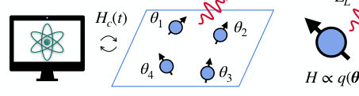
<figcaption class="paper-figure-caption"><b>Fig 1.</b> FIG. 1. (a) Schematic of multiparameter function estima- tion with Markovian noise. A multi-qubit sensor with un- known Hamiltonian parameters θ and jump operators L is coupled through a parameter-independent control Hamilto- nian Hc(t) to a noiseless ancillary quantum processor. The objective is to estimate a function q(θ) without reconstructing the full parameter vector. (b) Optimized control and error correction reduce the dynamics to an effective single-qubit, single-parameter sensing problem with logical Hamiltonian ∝q(θ)ZL and, in general, logical dephasing noise. The func- tional HNLS condition (see Theorem 1) determines the ab- sence or presence of this logical noise or,...</figcaption>
</figure>
</div>

<p><strong>Summary.</strong> This paper tackles the challenge of precisely estimating a function of multiple unknown parameters within a noisy quantum system. By employing quantum error correction techniques, the authors derive fundamental limits on measurement precision. The key finding is that measuring the function directly offers a significant advantage over measuring each parameter separately, even when noise is present.</p>
<p><strong>Why it may be interesting.</strong> This work provides rigorous theoretical tools for optimizing quantum sensing protocols in realistic noisy environments, which is crucial for designing fault-tolerant quantum measurements.</p>
<details>
<summary>Detailed structure</summary>
<p><strong>Main problem.</strong> The paper establishes the ultimate precision limits for estimating a function of multiple Hamiltonian parameters in the presence of Markovian noise.</p>
<p><strong>Main result.</strong> It shows that direct function estimation can substantially outperform estimating all parameters individually, achieving an advantage that scales with both evolution time and the number of parameters.</p>
<p><strong>Method.</strong> The authors use quantum error correction (QEC) techniques, deriving bounds on the Quantum Fisher Information (QFI) by reducing the multiparameter problem to an effective single-parameter sensing problem.</p>
<p><strong>Model / system.</strong> The system evolves under a Lindblad master equation governed by a Hamiltonian $H(s) = H_0 + H_c(s)$, where $H_0$ depends on unknown parameters $    heta$. The analysis focuses on the achievable precision in estimating a function $q(	heta)$.</p>
<p><strong>Key observables.</strong> The variance of the estimator $    ext{var}(q_{    ext{est}})$ and the Quantum Fisher Information ($F_q$).</p>
<p><strong>Important parameters / regimes.</strong> Evolution time ($t$), number of parameters ($m$), and the noise strength ($\epsilon$).</p>
<p><strong>Assumptions / limitations.</strong> The analysis relies on constructing optimal quantum error-correcting codes and assuming the ability to perform measurements that project the dynamics onto a code space.</p>
<p><strong>Figures summary.</strong> Figures schematically illustrate the multiparameter function estimation process with noise, showing how optimized control and error correction reduce the dynamics to an effective single-qubit sensing problem.</p>
<p><strong>Paper structure.</strong> The paper progresses from establishing the general noisy multiparameter estimation problem, deriving the functional Hamiltonian-not-in-Lindblad-span condition for Heisenberg scaling, and finally constructing codes and analyzing the advantage $\eta$ over individual parameter estimation.</p>
</details>
<details>
<summary>Abstract</summary>
<p>We establish the ultimate precision limits for estimating a function of multiple Hamiltonian parameters in the presence of Markovian noise. By reducing multiparameter function estimation to an optimization over effective single-parameter embeddings, we derive tight bounds on the quantum Fisher information. We identify a necessary and sufficient functional Hamiltonian-not-in-Lindblad-span condition for Heisenberg-limited scaling in time. When this condition holds, we construct a code that simultaneously removes the noise and nuisance Hamiltonian parameters while preserving the target signal. When it fails, we derive the optimal standard quantum-limit coefficient and show that it is asymptotically attainable using approximate quantum error correction. Finally, we demonstrate that direct function estimation can substantially outperform estimating all parameters individually and subsequently evaluating the function. This advantage can scale with both the evolution time and the number of parameters.</p>
</details>
<p><sub><a href="#top">↑ back to top</a></sub></p>

<p><a id="paper-2609.16132"></a></p>
<h3 id="exact-group-invariant-scar-towers-in-two-dimensional-gauge-theories"><a href="http://arxiv.org/abs/2609.16132v1">Exact group invariant scar towers in two dimensional gauge theories</a></h3>
<p><strong>Authors:</strong> João Barata, Kiryl Pakrouski, Andrey V. Sadofyev<br>
<strong>Type:</strong> theory · <strong>Category:</strong> strongly correlated electrons · <strong>PDF:</strong> <a href="https://arxiv.org/pdf/2609.16132v1">https://arxiv.org/pdf/2609.16132v1</a><br>
<strong>Analysis basis:</strong> full PDF text, analyzed in chunks
<strong>Topic relevance:</strong> 🔥 <code>scars &amp; prethermalization</code> <strong>5/5</strong> · <code>non-equilibrium universality</code> <strong>3/5</strong> · <code>Keldysh / 2PI / non-Gaussian methods</code> <strong>1/5</strong> · <code>analog quantum simulation</code> <strong>1/5</strong> · <code>driven-dissipative phase transition</code> <strong>1/5</strong> · <code>methods for driven-dissipative</code> <strong>1/5</strong></p>
<div class="figure-strip-hint">↔ Scroll figures horizontally</div>
<div class="paper-figures-scroll">
<figure class="paper-figure-card">
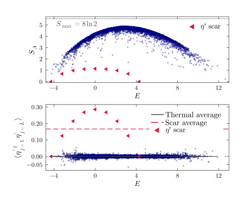
<figcaption class="paper-figure-caption"><b>Fig 1.</b> FIG. 1. Top: Entanglement entropy for the middle cut. The top horizontal line indicates the maximum possible entangle- ment in the system. Entanglement of scars is in agreement with analytical expressions [58]. Bottom: Two-point func- tion ⟨η′† j=1η′ j=L⟩. In the scar states it is n(L−n)</figcaption>
</figure>
<figure class="paper-figure-card">
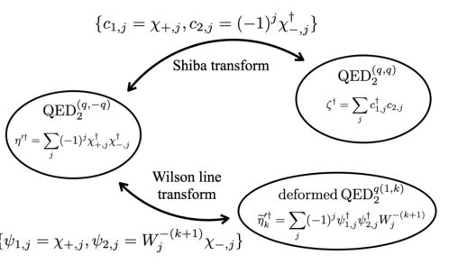
<figcaption class="paper-figure-caption"><b>Fig 2.</b> FIG. 2. Mappings of the η′ scar tower under Shiba and Wilson line transformations.</figcaption>
</figure>
</div>

<p><strong>Summary.</strong> This work provides an analytical construction of exact, gauge-invariant many-body scar states in 2D gauge theories. These states are characterized by suppressed entanglement and exhibit coherent, Josephson-like dynamics governed by a conserved pseudo-spin symmetry. The findings suggest a universal mechanism for non-thermal behavior in quantum field theories.</p>
<p><strong>Why it may be interesting.</strong> The concept of protected, non-thermal states (scars) is highly relevant to understanding non-equilibrium dynamics in strongly correlated systems, offering an analytical handle on deviations from thermalization.</p>
<details>
<summary>Detailed structure</summary>
<p><strong>Main problem.</strong> The paper addresses the open question of how out-of-equilibrium states in quantum gauge field theories lose memory of initial conditions, focusing on the persistence of exceptional, athermal states known as quantum many-body scars.</p>
<p><strong>Main result.</strong> The authors construct an exact, algebraically defined tower of gauge-invariant scar states in 2D gauge theories, showing they exhibit anomalously low entanglement and long-range correlations.</p>
<p><strong>Method.</strong> The construction relies on identifying a symmetry-generating algebra (using an $\eta$-pairing operator) that annihilates the scar subspace, which is then analyzed using exact diagonalization and bosonization techniques.</p>
<p><strong>Model / system.</strong> The primary model is two-dimensional gauge theories, specifically the massless two-flavor Schwinger model ($QED(q, -q)_2$), analyzed on a lattice.</p>
<p><strong>Key observables.</strong> Anomalously low bipartite entanglement entropy, long-range pair correlations, and coherent flavor precession dynamics ($\dot{\vartheta} = \Delta$).</p>
<p><strong>Important parameters / regimes.</strong> Fermion masses ($m_f$), the chemical potential bias ($\Delta$), and the lattice spacing ($a$).</p>
<p><strong>Assumptions / limitations.</strong> The analysis assumes the existence of a conserved pseudo-spin symmetry that protects the scar subspace, and it notes that finite fermion masses break this exact protection.</p>
<p><strong>Figures summary.</strong> Figures numerically compare entanglement entropy and two-point correlation functions for scar states versus thermal averages, and map the $\eta'$ scar tower under various transformations.</p>
<p><strong>Paper structure.</strong> The paper builds from the general problem of ETH violation to the specific construction of the scar tower using algebraic methods, analyzing its properties (low entanglement, correlations) and its dynamics (Josephson-like precession) under symmetry-preserving and symmetry-breaking perturbations.</p>
</details>
<details>
<summary>Abstract</summary>
<p>We construct exact many-body scar towers in two dimensional gauge theories with two flavors of massless fundamental fermions. For oppositely charged fermions, the scar subspace is generated by a gauge-neutral $η$-pairing operator, and admits a purely algebraic construction. Exact diagonalization methods reveal anomalously low entanglement and long-range pair correlations in the scar states. Charge conjugation maps the $η$-tower to a vector-flavor polarization sector of the equal charge model, yielding an interpretation as a coherent flavor mode with Josephson-like phase dynamics. Finite fermion masses mix the protected pair with an orthogonal channel and destroy the exact tower. The identified scar tower can be algebraically realized in a large family of lattice field theories, revealing a universal character of these states. Our results provide an analytical construction of invariant scar subspaces in a gauge theory with a nontrivial continuum interpretation.</p>
</details>
<p><sub><a href="#top">↑ back to top</a></sub></p>

<p><a id="paper-2609.17009"></a></p>
<h3 id="indistinguishability-of-single-raman-photons-from-single-atoms"><a href="http://arxiv.org/abs/2609.17009v1">Indistinguishability of single Raman photons from single atoms</a></h3>
<p><strong>Authors:</strong> Pascal Baumgart, Max Bergerhoff, Jürgen Eschner<br>
<strong>Type:</strong> theory · <strong>Category:</strong> other · <strong>PDF:</strong> <a href="https://arxiv.org/pdf/2609.17009v1">https://arxiv.org/pdf/2609.17009v1</a><br>
<strong>Analysis basis:</strong> full PDF text, analyzed in chunks
<strong>Topic relevance:</strong> 🔥 <code>interference shaping light</code> <strong>4/5</strong> · 🔥 <code>methods for driven-dissipative</code> <strong>4/5</strong> · <code>correlated / nonlocal dissipation</code> <strong>3/5</strong> · <code>quantum measurements</code> <strong>3/5</strong> · <code>Full counting statistics</code> <strong>1/5</strong> · <code>analog quantum simulation</code> <strong>1/5</strong> · <code>driven-dissipative phase transition</code> <strong>1/5</strong> · <code>quantum optics experiment</code> <strong>1/5</strong></p>
<div class="figure-strip-hint">↔ Scroll figures horizontally</div>
<div class="paper-figures-scroll">
<figure class="paper-figure-card">
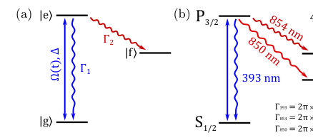
<figcaption class="paper-figure-caption"><b>Fig 1.</b> FIG. 1. (a) Three-level system in the Λ-configuration with a stable ground state |g⟩, short-lived excited state |e⟩, and a (meta-)stable final state |f⟩. The |g⟩↔|e⟩transition is driven by a laser pulse with time-dependent Rabi frequency Ω(t) and detuning ∆. The excited state decays to the two (meta-)stable states with spontaneous decay constants Γ1 and Γ2. (b) Relevant level scheme of 40Ca+ with transition wave- lengths and spontaneous decay constants.</figcaption>
</figure>
<figure class="paper-figure-card">
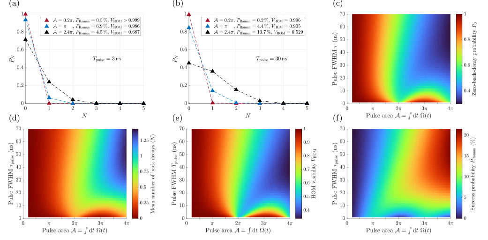
<figcaption class="paper-figure-caption"><b>Fig 2.</b> FIG. 2. Simulation results for the model outlined in section I applied to single trapped 40Ca+ ions with spontaneous decay constants Γ1 = 2π×21.49 MHz and Γ2 = 2π×1.35 MHz + 2π×0.152 MHz. (a)–(b) Distributions of probabilities PN for exactly N back-decays before the emission of a Raman photon for two different pulse lengths (a) Tpulse = 3 ns and (b) Tpulse = 30 ns and three different pulse areas A = 0.2π (red), π (blue), and 2.4π (black) each. The data is shown as triangles with dotted lines connecting the points for visual guidance. The values of the success probability PRaman and the HOM visibility VHOM corresponding to each excitation pulse are listed in the legends. (c) Dependency of...</figcaption>
</figure>
<figure class="paper-figure-card">
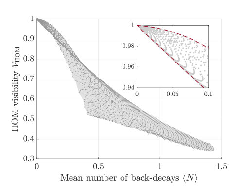
<figcaption class="paper-figure-caption"><b>Fig 3.</b> FIG. 3. All pairs (⟨N⟩, VHOM) of mean number of back-decays and HOM visibility, for all sets of excitation pulse parameters from Figure 2. The gray-shaded area approximates the region that contains all simulated data points (gray dots). Inset: Close-up of the data points for small values of ⟨N⟩including two red-dotted lines showing the lower and upper bound of the HOM visibility in dependence of ⟨N⟩.</figcaption>
</figure>
<figure class="paper-figure-card">
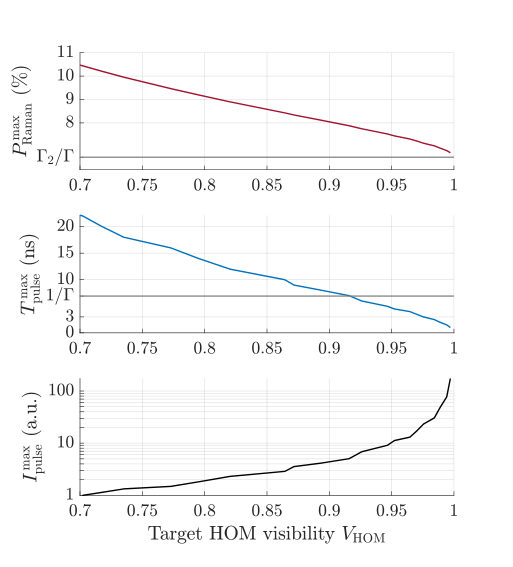
<figcaption class="paper-figure-caption"><b>Fig 4.</b> FIG. 5. The three graphs show, for a given target HOM visibility, the maximum achievable success probability P max Raman (top), as well as the pulse length T max pulse (middle) and pulse intensity I max pulse (bottom) that realize this value.</figcaption>
</figure>
<figure class="paper-figure-card">
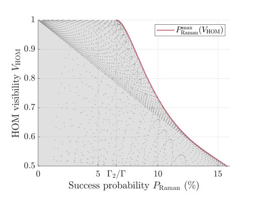
<figcaption class="paper-figure-caption"><b>Fig 5.</b> FIG. 4. All pairs (PRaman, VHOM) of success probability and HOM visibility, for all sets of excitation pulse parameters from figure 2. The gray-shaded area approximates the region that contains all simulated data points (gray dots). The red line indicates the boundary curve at which the success probability is maximized for a given HOM visibility.</figcaption>
</figure>
</div>

<p><strong>Summary.</strong> This theoretical study analyzes the indistinguishability of single photons emitted from trapped $^{40}	ext{Ca}^+$ ions via Raman scattering. It shows that spontaneous decay back to the initial state degrades the Hong-Ou-Mandel (HOM) interference visibility. The key finding is that the mean number of back-decays ($\langle N 
angle$) provides a measurable metric directly correlating with the achievable quantum interference visibility.</p>
<p><strong>Why it may be interesting.</strong> This work is highly relevant to AMO physics and quantum optics as it tackles the fundamental decoherence mechanism (spontaneous decay) limiting the performance of solid-state and trapped-ion quantum memories and repeaters. The quantitative link between decay statistics and interference visibility is a key theoretical result.</p>
<details>
<summary>Detailed structure</summary>
<p><strong>Main problem.</strong> The study investigates how spontaneous decay processes affect the indistinguishability of single Raman photons generated from trapped ions, which is crucial for quantum networking applications.</p>
<p><strong>Main result.</strong> The mean number of back-decays ($\langle N 
angle$) is found to be a measurable quantity that directly correlates with the achievable Hong-Ou-Mandel (HOM) visibility, demonstrating a clear trade-off with photon yield.</p>
<p><strong>Method.</strong> The authors employ numerical simulations based on solving the master equation in Lindblad form, utilizing quantum jump decomposition to track decay paths.</p>
<p><strong>Model / system.</strong> The system involves single trapped $^{40}	ext{Ca}^+$ ions undergoing Raman scattering driven by few-nanosecond pulses, modeled as a three-level $\Lambda$-system. The dynamics are governed by a master equation incorporating spontaneous decay jump operators.</p>
<p><strong>Key observables.</strong> HOM Visibility ($V$), Mean number of back-decays ($\langle N 
angle$), Probability of zero back-decays ($P_0$), and Raman photon success probability ($P_{	ext{Raman}}$).</p>
<p><strong>Important parameters / regimes.</strong> Excitation pulse duration (few-nanosecond scale), decay rates ($\Gamma$), and the specific ion species ($^{40}	ext{Ca}^+$).</p>
<p><strong>Assumptions / limitations.</strong> The analysis relies on the validity of the three-level model and the use of quantum jump decomposition to account for decay pathways.</p>
<p><strong>Figures summary.</strong> Figures illustrate the distributions of back-decay probabilities ($P_N$) for varying pulse lengths and demonstrate the quantitative correlation between $\langle N 
angle$ and $V_{	ext{HOM}}$ using derived inequalities.</p>
<p><strong>Paper structure.</strong> The paper first establishes the theoretical framework using the master equation and quantum jump decomposition. It then calculates key observables like $\langle N 
angle$ and $V_{	ext{HOM}}$, deriving explicit mathematical relationships between them. Finally, it extends the analysis to compare different trapped-ion species for long-range entanglement swapping.</p>
</details>
<details>
<summary>Abstract</summary>
<p>We theoretically investigate the indistinguishability of single photons generated from single trapped $^{40}$Ca$^+$ ions in a Raman scattering process driven by few-nanosecond excitation pulses. Of particular interest is how spontaneous decay back to the initial state affects Hong-Ou-Mandel (HOM) photon interference. Numerical simulations identify the mean number of back-decays as a measurable quantity that correlates with achievable HOM visibility. Optimization of the excitation pulse with respect to a trade-off between photon yield and indistinguishability is analyzed. Finally, we compare the performance of different trapped-ion species for long-range dual-rail entanglement swapping via HOM photon interference.</p>
</details>
<p><sub><a href="#top">↑ back to top</a></sub></p>

<p><a id="paper-2609.16108"></a></p>
<h3 id="large-scale-quantum-simulations-of-dissipative-spin-12-heisenberg-chains"><a href="http://arxiv.org/abs/2609.16108v1">Large-scale quantum simulations of dissipative spin-1/2 Heisenberg chains</a></h3>
<p><strong>Authors:</strong> João C. Getelina, Andrew Cox, Muhammad Asaduzzaman, Omar Alsheikh, Ryan S. Bennink, James K. Freericks, Alexander F. Kemper<br>
<strong>Type:</strong> both · <strong>Category:</strong> other · <strong>PDF:</strong> <a href="https://arxiv.org/pdf/2609.16108v1">https://arxiv.org/pdf/2609.16108v1</a><br>
<strong>Analysis basis:</strong> full PDF text, analyzed in chunks
<strong>Topic relevance:</strong> 🔥 <code>driven-dissipative phase transition</code> <strong>4/5</strong> · 🔥 <code>methods for driven-dissipative</code> <strong>4/5</strong> · <code>analog quantum simulation</code> <strong>3/5</strong> · <code>non-equilibrium universality</code> <strong>3/5</strong> · <code>Keldysh / 2PI / non-Gaussian methods</code> <strong>2/5</strong> · <code>correlated / nonlocal dissipation</code> <strong>1/5</strong> · <code>quantum measurements</code> <strong>1/5</strong></p>
<div class="figure-strip-hint">↔ Scroll figures horizontally</div>
<div class="paper-figures-scroll">
<figure class="paper-figure-card">
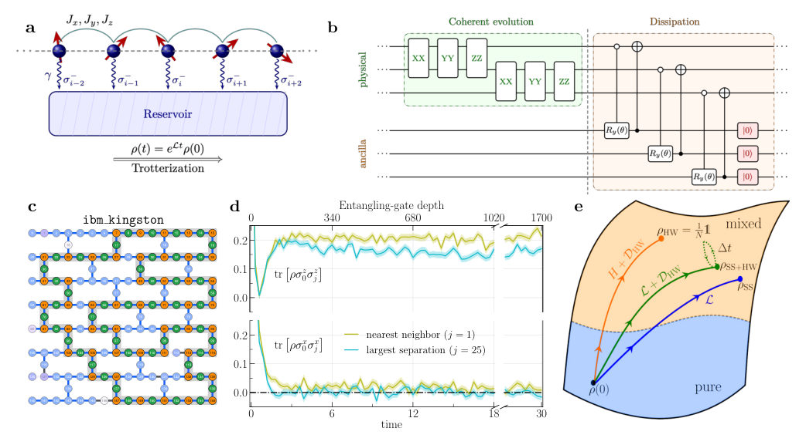
<figcaption class="paper-figure-caption"><b>Fig 1.</b> FIG. 1. Stable non-equilibrium steady states of the dissipative Heisenberg model (a) 1D dissipative spin-1/2 Heisenberg chain. The system sites interact with their nearest neighbors and with a reservoir that flips the spin down at a dissipation rate γ. (b) Quantum circuit representation of a single time step in the Liouvillian dynamics of an open-boundary chain of size L = 3, consisting of two parts: a coherent evolution under the closed system Hamiltonian, and a (non-unitary) dissipative part representing the interaction with the reservoir, which is implemented by coupling to an ancilla that is reset each time step. (c) Qubit layout used in our simulations in the 156-qubit superconducting...</figcaption>
</figure>
<figure class="paper-figure-card">
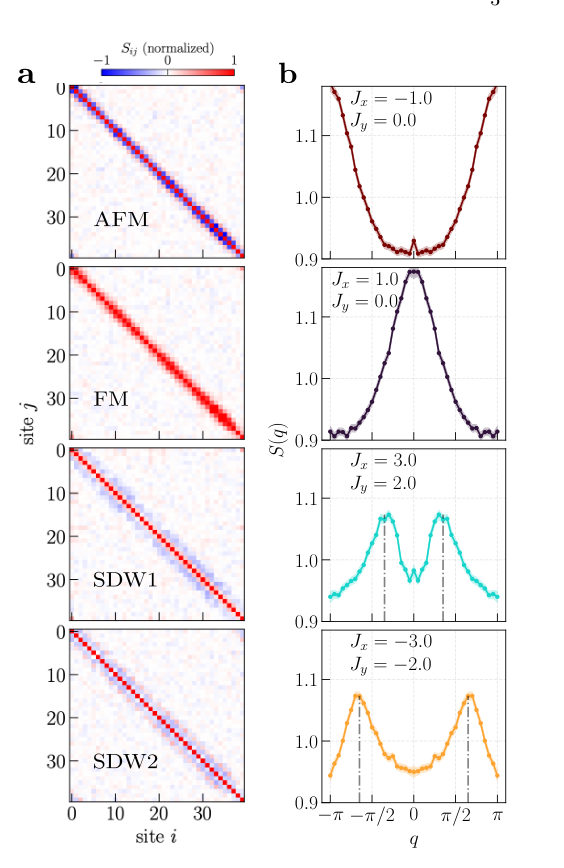
<figcaption class="paper-figure-caption"><b>Fig 2.</b> FIG. 2. Distinguishing steady state phases of the dissi- pative Heisenberg model. Real space (a) and momentum space (b) structure factors for a 40 site (80 qubit) chain, av- eraged over the last 10 time steps. Vertical lines in the SDW panels in (b) indicate the expected ordering vector for ten- sor network calculations for 40 sites. Shaded areas around the curves correspond to the 95% confidence interval of 1000 bootstrap samples, resampled from the last 10 time steps.</figcaption>
</figure>
<figure class="paper-figure-card">
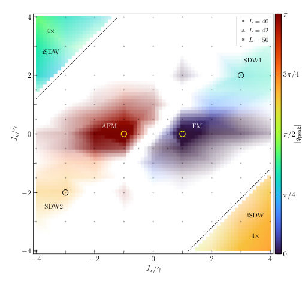
<figcaption class="paper-figure-caption"><b>Fig 3.</b> FIG. 3. Phase diagram of the dissipative spin-1/2 Heisenberg model. Peak position in S(q) from quantum hardware simulation, opacity is set by the height of the peak. Data is interpolated before plotting. Corners show an incip- ient SDW phase, which has been scaled 4× for visibility. All correlator data obtained from the hardware used to create this phase diagram are presented in the App. B.</figcaption>
</figure>
<figure class="paper-figure-card">
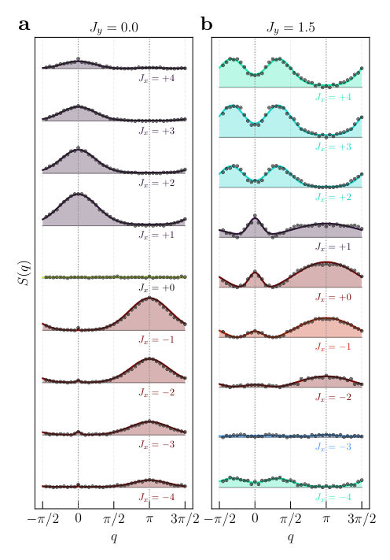
<figcaption class="paper-figure-caption"><b>Fig 4.</b> FIG. 4. Observing the crossover between magnetic phases. Static structure factor S(q) for several values of cou- pling amplitude Jx and fixed (a) Jy = 0.0 and (b) Jy = 1.5. Symbols correspond to the quantum hardware data points, whereas lines and shaded area correspond to curve fits of sum of Gaussian distributions. System size is L = 40 (80 qubits) and the dissipative rate is γ = Jz = 1.</figcaption>
</figure>
</div>

<p><strong>Summary.</strong> This paper uses large-scale quantum simulations on superconducting hardware to map the phase diagram of a dissipative spin-1/2 Heisenberg chain. By analyzing the non-equilibrium steady state using static structure factors, the authors resolve long-standing theoretical uncertainties regarding the system's magnetic ordering. The results confirm that quantum computers are a viable tool for investigating complex open quantum systems.</p>
<p><strong>Why it may be interesting.</strong> This work directly addresses the intersection of open quantum systems and quantum computation, demonstrating that quantum hardware can tackle complex, non-equilibrium physics that is analytically or numerically intractable.</p>
<details>
<summary>Detailed structure</summary>
<p><strong>Main problem.</strong> The primary goal is to map the phase diagram of a non-equilibrium steady state (NESS) in a dissipative spin-1/2 Heisenberg chain, a system difficult to analyze due to its coupling to an environment.</p>
<p><strong>Main result.</strong> The quantum simulations successfully map a rich non-equilibrium phase diagram across the Jx-Jy plane, confirming the feasibility of using quantum hardware to study dissipative quantum systems.</p>
<p><strong>Method.</strong> The study employs quantum hardware simulations (using Lindblad dynamics via Stinespring dilation) and compares these results with theoretical methods like Tensor Network Simulations (TJM) and exact diagonalization.</p>
<p><strong>Model / system.</strong> The system is the dissipative spin-1/2 Heisenberg chain, whose dynamics are governed by a Lindblad master equation. The Hamiltonian involves couplings $J_x, J_y, J_z$, and the dissipation is introduced via local spontaneous spin decay.</p>
<p><strong>Key observables.</strong> Static structure factor $S(q)$, which is used to identify magnetic orders (FM, AFM, SDW, PM) based on the peak position $q^*$ and prominence $\Pi$.</p>
<p><strong>Important parameters / regimes.</strong> The phase diagram is scanned across the $J_x–J_y$ plane, with fixed parameters like $J_z = \gamma = 1$. System sizes up to $L=50$ sites were simulated.</p>
<p><strong>Assumptions / limitations.</strong> The analysis must account for the limitations of the Trotter approximation, which can introduce spurious 'incipient' phases, and the need for specialized interpolation techniques (like phasors) to cross phase boundaries.</p>
<p><strong>Figures summary.</strong> Figures illustrate the setup on quantum hardware, the convergence of correlation functions to steady states, and the resulting phase diagrams mapping magnetic orders (FM, AFM, SDW) across the coupling parameter space.</p>
<p><strong>Paper structure.</strong> The work progresses by defining the physical model and the challenge of NESS computation, detailing the quantum hardware simulation approach, presenting the results via structure factor analysis, and finally comparing and refining the phase diagram using advanced interpolation techniques.</p>
</details>
<details>
<summary>Abstract</summary>
<p>A quantum many-body system coupled to an environment relaxes to a nonequilibrium steady state that can sustain order with no equilibrium counterpart. Computing such steady states is harder than closed-system dynamics as the density matrix problem squares the Hilbert-space dimension, and no free energy selects the steady state. The dissipative spin-1/2 Heisenberg chain is a benchmark example for nonequilibrium steady state physics; various methods have each calculated its phase diagram but do not agree, and a controlled determination at large system size has remained out of reach. Here we simulate the Lindblad dynamics of chains of up to 50 sites on the superconducting processor ibm_kingston -- 100 simultaneously active qubits at up to 1700 entangling-gate depths -- realizing the dissipation via Stinespring dilation. The system's dissipative evolution is a self-correcting mechanism that effectively erases errors, so hardware noise enters only as a weak competing dissipator. We measure static structure factors and resolve ferromagnetic, antiferromagnetic, spin-density-wave, and paramagnetic steady states, mapping the phase diagram with 117 quantum hardware data points across the $J_x$--$J_y$ plane. We uncover a rich non-equilibrium phase diagram of ordered phases with only remnants of the mean-field order, and where sharp transitions give way to the crossovers expected in one dimension. We also find the existence of an incipient (Trotter-induced) spin density wave phase, highlighting the potential of controlled Trotterization as a tool to engineer various magnetic phases in dissipative spin systems. Our quantum simulations largely settle the lingering uncertainty regarding the correct phase diagram of this benchmark system. Moreover, they show that quantum computers are now a feasible tool for addressing scientific questions involving dissipative quantum systems.</p>
</details>
<p><sub><a href="#top">↑ back to top</a></sub></p>

<p><a id="paper-2609.16121"></a></p>
<h3 id="the-transient-counting-statistics-of-autonomous-quantum-clocks"><a href="http://arxiv.org/abs/2609.16121v1">The Transient Counting Statistics of Autonomous Quantum Clocks</a></h3>
<p><strong>Authors:</strong> Oscar Arandes, Sreenath K. Manikandan<br>
<strong>Type:</strong> theory · <strong>Category:</strong> other · <strong>PDF:</strong> <a href="https://arxiv.org/pdf/2609.16121v1">https://arxiv.org/pdf/2609.16121v1</a><br>
<strong>Analysis basis:</strong> full PDF text, analyzed in chunks
<strong>Topic relevance:</strong> 🔥 <code>Full counting statistics</code> <strong>4/5</strong> · <code>quantum measurements</code> <strong>3/5</strong> · <code>Keldysh / 2PI / non-Gaussian methods</code> <strong>2/5</strong> · <code>Tavis-Cummings &amp; cavity-many-emitter</code> <strong>2/5</strong> · <code>correlated / nonlocal dissipation</code> <strong>2/5</strong> · <code>methods for driven-dissipative</code> <strong>2/5</strong> · <code>driven-dissipative phase transition</code> <strong>1/5</strong> · <code>non-equilibrium universality</code> <strong>1/5</strong> · <code>superradiant laser</code> <strong>1/5</strong></p>
<div class="figure-strip-hint">↔ Scroll figures horizontally</div>
<div class="paper-figures-scroll">
<figure class="paper-figure-card">
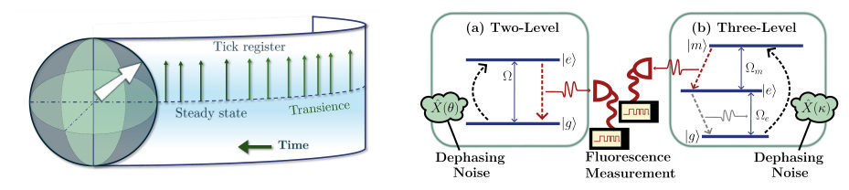
<figcaption class="paper-figure-caption"><b>Fig 1.</b> FIG. 1. Schematic of the clock dynamics. Left: An initial qubit state (Bloch sphere) drives a tick register, where fluorescence events are recorded as ticks along the time axis. Reading from right to left, the dynamics evolve from the initial state through the transient regime toward the steady state. Right: A quantum emitter is subject to two processes: dephasing noise generated by the operator ˆ X (green) and photodetection of the emitted fluorescence (red), whose discrete clicks constitute the ticks of the clock. The dephasing drives the population and closes the emission cycle, while the counted fluorescence yields the counting statistics analyzed in the text. (a) Two-level emitter: the...</figcaption>
</figure>
<figure class="paper-figure-card">
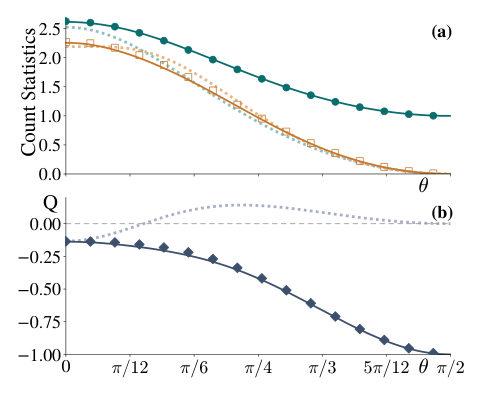
<figcaption class="paper-figure-caption"><b>Fig 2.</b> FIG. 3. (a) Mean number (green) and variance (orange) of clicks as functions of θ for the observable ˆ X(θ). (b) Mandel Qt parameter as a function of θ (dark blue). In both panels, dashed lines denote the LDT predictions, while solid lines in- clude both the LDT and transient contributions arising from the initial state (Eqs. (E24) and (E25) evaluated analytically). Scatter points correspond to numerical simulations performed using the Kraus-operator formalism (see Appendix A). Pa- rameters: Ω= 1, γw = 6, and γm = 8. Simulations were performed with time step dt = 0.001 over 1000 steps using 106 trajectories. Initial state ˆρ(0) = |e⟩⟨e|.</figcaption>
</figure>
<figure class="paper-figure-card">
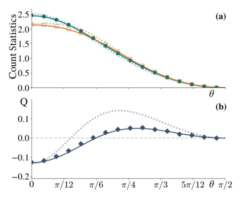
<figcaption class="paper-figure-caption"><b>Fig 3.</b> FIG. 2. (a) Mean number (green) and variance (orange) of clicks as functions of θ for the observable ˆ X(θ). (b) Mandel Qt parameter as a function of θ (dark blue). In both panels, dashed lines denote the LDT predictions, while solid lines in- clude both the LDT and transient contributions arising from the initial state (Eqs. (E24) and (E25) evaluated analytically). Scatter points correspond to numerical simulations performed using the Kraus-operator formalism (see Appendix A). Pa- rameters: Ω= 1, γw = 6, and γm = 8. Simulations were performed with time step dt = 0.001 over 1000 steps using 106 trajectories. Initial state ˆρ(0) = |g⟩⟨g|.</figcaption>
</figure>
<figure class="paper-figure-card">
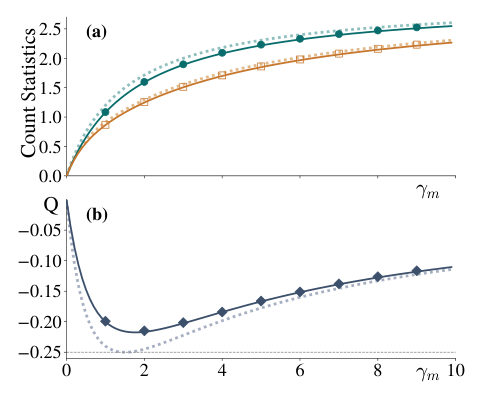
<figcaption class="paper-figure-caption"><b>Fig 4.</b> FIG. 4. (a) Mean number (green) and variance (orange) of clicks as functions of γm for the observable ˆ X(θ = 0) = ˆσx. (b) Mandel Qt parameter as a function of γm (dark blue). In both panels, dashed lines denote the leading-order predictions (see Eqs. (33), (35)), while solid lines include both the LDT and transient contributions arising from the initial state (see Eqs. (34), (36) and (37)). Scatter points correspond to nu- merical simulations performed using the Kraus-operator for- malism (see Appendix A). Parameters: Ω= 1, γw = 6. The simulations are performed with time step dt = 0.001 over 1000 steps using 106 trajectories. Initial state ˆρ(0) = |g⟩⟨g|.</figcaption>
</figure>
<figure class="paper-figure-card">
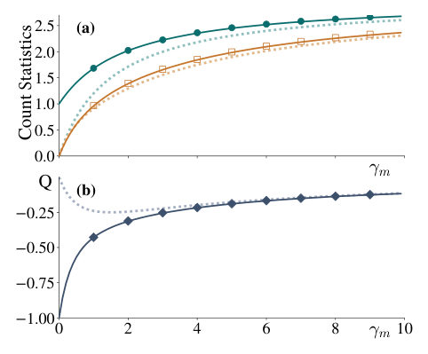
<figcaption class="paper-figure-caption"><b>Fig 5.</b> FIG. 5. (a) Mean number (green) and variance (orange) of clicks as functions of γm for the observable ˆ X(θ = 0) = ˆσx. (b) Mandel Qt parameter as a function of γm (dark blue). In both panels, dashed lines denote the LDT predictions, while solid lines include both the LDT and transient contributions arising from the initial state (see Eqs. (38), (39) and (40)). Scatter points correspond to numerical simulations performed using the Kraus-operator formalism (see Appendix A). Pa- rameters: Ω= 1, γw = 6. The simulations are performed with time step dt = 0.001 over 1000 steps using 106 trajecto- ries. Initial state ˆρ(0) = |e⟩⟨e|.</figcaption>
</figure>
</div>

<p><strong>Summary.</strong> This paper develops a theoretical framework to analyze the transient counting statistics of autonomous quantum clocks modeled by multi-level emitters. By employing a revised Large Deviation Principle, the authors quantify how initial conditions affect the count statistics in the few-quanta regime. This provides a new, complementary tool for understanding the fundamental limits of precision timekeeping in quantum systems.</p>
<p><strong>Why it may be interesting.</strong> This work is highly relevant to AMO physics, specifically quantum optics and open quantum systems, as it pushes the theoretical understanding of quantum measurement statistics into the non-trivial transient regime.</p>
<details>
<summary>Detailed structure</summary>
<p><strong>Main problem.</strong> The paper addresses characterizing the fundamental limits to precise timekeeping and quantum sensing using autonomous quantum emitters when operating in the few-quanta regime.</p>
<p><strong>Main result.</strong> It develops a framework to characterize transient initial-state contributions to the counting statistics, providing complementary insights beyond the standard semiclassical or steady-state analyses.</p>
<p><strong>Method.</strong> The analysis employs a revised Large Deviation Principle incorporating finite-time contributions, utilizing the moment generating function (MGF) derived from the evolution of the tilted density operator.</p>
<p><strong>Model / system.</strong> The system models simple two- and three-level quantum emitters (lasers) acting as quantum coherent emitters, whose dynamics are governed by the Lindblad master equation and fueled by dephasing quantum noise.</p>
<p><strong>Key observables.</strong> Transient counting statistics, average number of jumps $\langle N 
angle_t$, and the variance of the count record.</p>
<p><strong>Important parameters / regimes.</strong> The analysis focuses on the few-quanta regime ($\langle N 
angle_t \sim 1$) in the temporal domain, contrasting with the semiclassical regime.</p>
<p><strong>Assumptions / limitations.</strong> The analysis assumes the use of radiative transitions in an artificial atom and develops a framework to retain transient initial-state contributions.</p>
<p><strong>Figures summary.</strong> Figure 1 schematically illustrates clock dynamics for both two-level and three-level emitters, detailing the decay and dephasing pumping mechanisms.</p>
<p><strong>Paper structure.</strong> The paper builds from the general framework of quantum emitter dynamics (Lindblad equation) to applying advanced statistical tools (LDP, MGF) to calculate transient counting statistics, culminating in discussions on timekeeping implications.</p>
</details>
<details>
<summary>Abstract</summary>
<p>At the heart of every atomic clock is a quantum coherent emitter, the laser, that could in principle be treated autonomously. While their frequency or phase stability is typically studied in the semiclassical regime of a large number of emitted quanta, recent works on autonomous quantum clocks suggest that the few-quanta regime can offer statistical information in the temporal domain. This provides complementary means to probe the fundamental limits to precise timekeeping in the quantum regime. Motivated by these works, we consider simple models for two- and three-level quantum emitters subject to an athermal fueling through dephasing, which generically results in coherences in the steady state. A large deviation principle with finite-time contributions is used to identify the transient counting statistics and their dependence on the initial conditions. We conclude by discussing the implications for precise timekeeping and quantum sensing using autonomous quantum emitters as clocks in their transient regime.</p>
</details>
<p><sub><a href="#top">↑ back to top</a></sub></p>

<p><a id="paper-2609.16559"></a></p>
<h3 id="diffusivity-in-dissipative-quantum-transport-from-an-exactly-solvable-krylov-chain"><a href="http://arxiv.org/abs/2609.16559v1">Diffusivity in Dissipative Quantum Transport from an Exactly Solvable Krylov Chain</a></h3>
<p><strong>Authors:</strong> Zhi-Li Zhou, Jorge Noronha<br>
<strong>Type:</strong> theory · <strong>Category:</strong> statistical mechanics · <strong>PDF:</strong> <a href="https://arxiv.org/pdf/2609.16559v1">https://arxiv.org/pdf/2609.16559v1</a><br>
<strong>Analysis basis:</strong> full PDF text, analyzed in chunks
<strong>Topic relevance:</strong> 🔥 <code>methods for driven-dissipative</code> <strong>4/5</strong> · <code>Keldysh / 2PI / non-Gaussian methods</code> <strong>3/5</strong> · <code>driven-dissipative phase transition</code> <strong>3/5</strong> · <code>non-equilibrium universality</code> <strong>2/5</strong> · <code>analog quantum simulation</code> <strong>1/5</strong> · <code>correlated / nonlocal dissipation</code> <strong>1/5</strong> · <code>quantum measurements</code> <strong>1/5</strong> · <code>scars &amp; prethermalization</code> <strong>1/5</strong></p>
<div class="figure-strip-hint">↔ Scroll figures horizontally</div>
<div class="paper-figures-scroll">
<figure class="paper-figure-card">
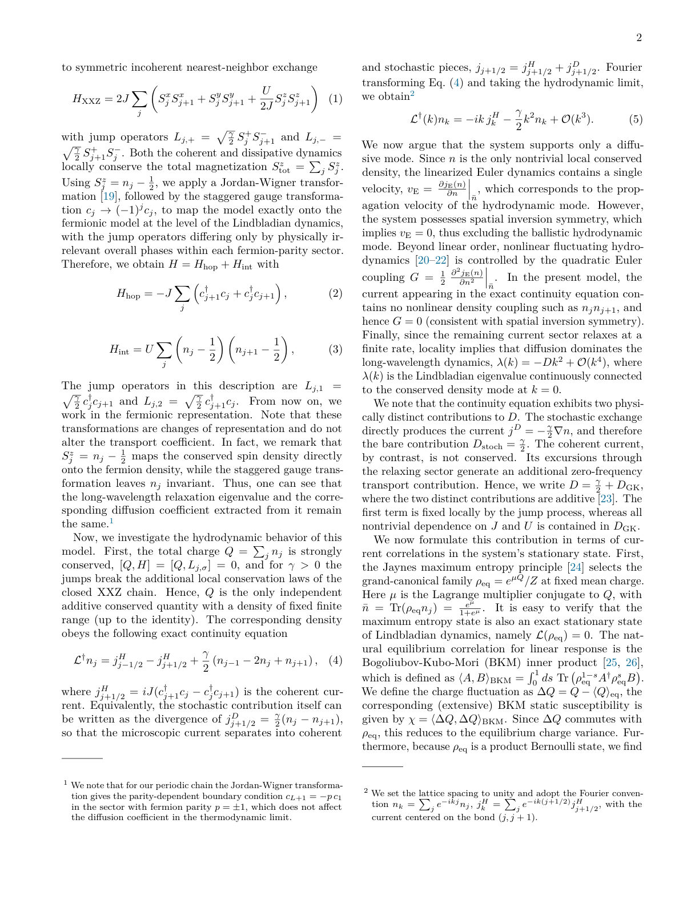
<figcaption class="paper-figure-caption"><b>Fig 1.</b> Low-resolution page preview, page 2</figcaption>
</figure>
<figure class="paper-figure-card">
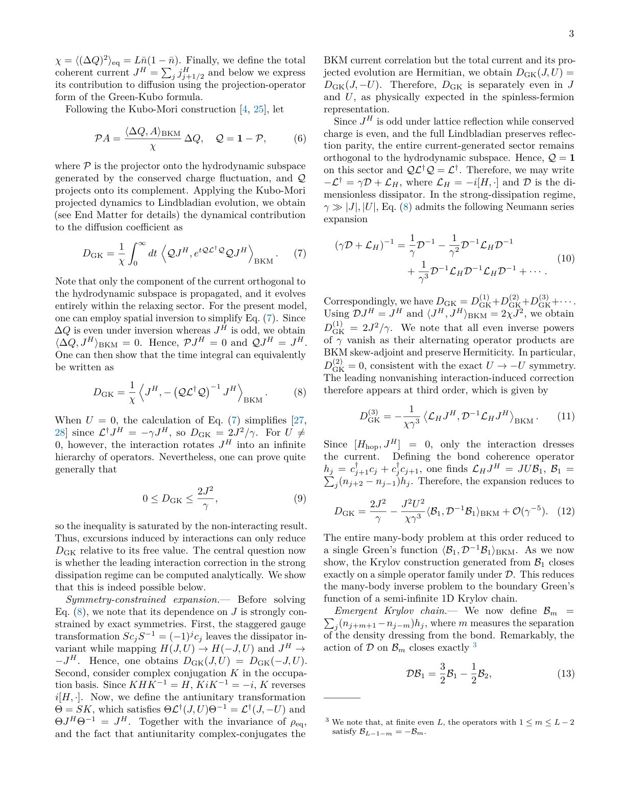
<figcaption class="paper-figure-caption"><b>Fig 2.</b> Low-resolution page preview, page 3</figcaption>
</figure>
<figure class="paper-figure-card">
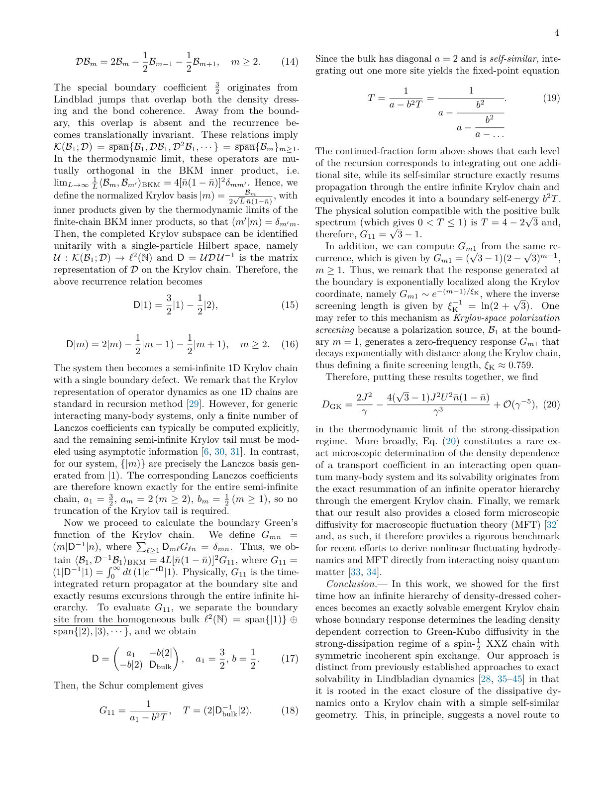
<figcaption class="paper-figure-caption"><b>Fig 3.</b> Low-resolution page preview, page 4</figcaption>
</figure>
<figure class="paper-figure-card">
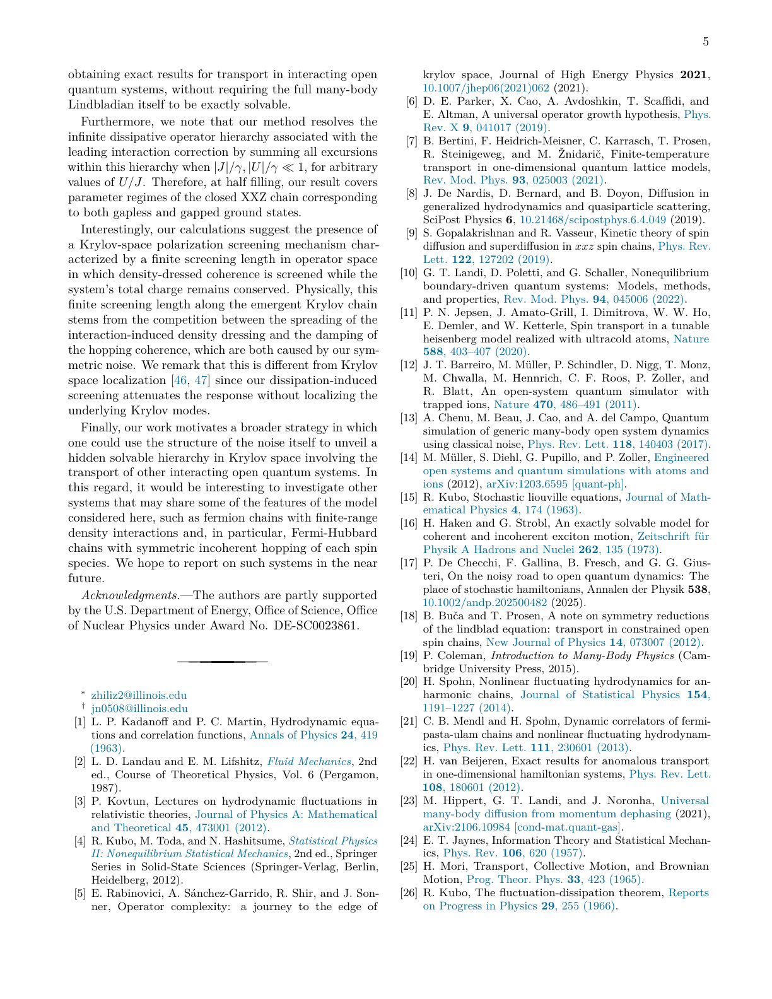
<figcaption class="paper-figure-caption"><b>Fig 4.</b> Low-resolution page preview, page 5</figcaption>
</figure>
<figure class="paper-figure-card">
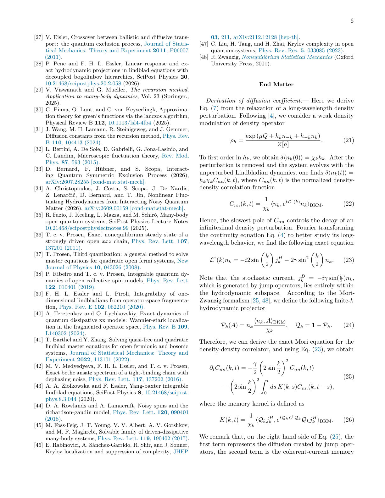
<figcaption class="paper-figure-caption"><b>Fig 5.</b> Low-resolution page preview, page 6</figcaption>
</figure>
</div>

<p><strong>Summary.</strong> This work develops a novel Krylov-space mechanism to exactly calculate the leading interaction correction to the diffusivity in a dissipative quantum spin chain. By mapping the dynamics onto a solvable semi-infinite Krylov chain, the authors derive a closed-form, microscopic expression for the transport coefficient in the strong-dissipation regime. This provides a powerful analytical tool for understanding quantum transport in open many-body systems.</p>
<p><strong>Why it may be interesting.</strong> The rigorous application of Krylov subspace techniques to solve non-equilibrium quantum dynamics in the strong-dissipation limit provides a powerful, exact analytical tool for calculating transport properties in open quantum systems.</p>
<details>
<summary>Detailed structure</summary>
<p><strong>Main problem.</strong> The paper addresses the analytically challenging computation of transport coefficients, specifically the leading density-dependent correction to the diffusivity, in interacting quantum many-body systems.</p>
<p><strong>Main result.</strong> The authors analytically determine this correction by mapping the dissipative dynamics onto a self-similar semi-infinite Krylov chain, yielding a closed-form expression for the diffusivity.</p>
<p><strong>Method.</strong> The core method involves developing a novel Krylov-space mechanism applied to the Green-Kubo formula within the strong-dissipation regime, allowing for the exact solution of the resulting operator hierarchy.</p>
<p><strong>Model / system.</strong> The system studied is a one-dimensional spin-1/2 XXZ chain undergoing Lindbladian evolution due to symmetric incoherent nearest-neighbor spin exchange. The model is mapped onto an interacting spinless-fermion chain.</p>
<p><strong>Key observables.</strong> Diffusivity (D), the interaction-dependent correction to diffusivity ($D_{GK}$), and the boundary Green's function ($G_{m1}$).</p>
<p><strong>Important parameters / regimes.</strong> Strong-dissipation regime ($\gamma \gg |J|, |U|$), hopping amplitude ($J$), interaction strength ($U$), and dissipation rate ($\gamma$).</p>
<p><strong>Assumptions / limitations.</strong> The analysis assumes the system supports only a diffusive mode and relies on the strong-dissipation limit for the perturbative expansion.</p>
<p><strong>Figures summary.</strong> Not specified.</p>
<p><strong>Paper structure.</strong> The paper first establishes the general framework using the Mori-Zwanzig formalism and the Green-Kubo formula. It then focuses on the strong-dissipation limit, where the problem is mapped onto an emergent Krylov chain structure. The solvability of this chain allows for the exact determination of the boundary Green's function, which yields the final result for $D_{GK}$.</p>
</details>
<details>
<summary>Abstract</summary>
<p>The computation of transport coefficients in interacting quantum many-body systems is rarely analytically accessible. Here, we develop a new Krylov-space mechanism that makes the leading density dependent correction to Green-Kubo diffusivity \emph{exactly} calculable in the strong-dissipation regime of a one-dimensional noisy spin-$\frac{1}{2}$ XXZ chain. This is done by showing that the density-polarization-dressed bond coherence generates a Krylov subspace where repeated action of the dissipator closes exactly on an explicitly identifiable operator family. Within this subspace, the dissipative dynamics is then mapped onto a self-similar semi-infinite chain with a boundary defect. Surprisingly, \emph{all} Lanczos coefficients of the Krylov chain and its boundary Green's function can be determined exactly. The latter then determines the exact leading density-dependent correction to the diffusivity. Finally, we calculate analytically the full boundary-to-bulk Green's function and find that it decays exponentially along the emergent Krylov chain.</p>
</details>
<p><sub><a href="#top">↑ back to top</a></sub></p>

<p><a id="paper-2609.16160"></a></p>
<h3 id="noise-induced-classical-phases-in-optimally-unraveled-random-quantum-circuits"><a href="http://arxiv.org/abs/2609.16160v1">Noise-induced classical phases in optimally-unraveled random quantum circuits</a></h3>
<p><strong>Authors:</strong> Lorenzo Fioroni, Filippo Ferrari, Emanuele Tirrito<br>
<strong>Type:</strong> theory · <strong>Category:</strong> disordered systems and neural networks · <strong>PDF:</strong> <a href="https://arxiv.org/pdf/2609.16160v1">https://arxiv.org/pdf/2609.16160v1</a><br>
<strong>Analysis basis:</strong> full PDF text, analyzed in chunks
<strong>Topic relevance:</strong> 🔥 <code>methods for driven-dissipative</code> <strong>4/5</strong> · 🔥 <code>quantum measurements</code> <strong>4/5</strong> · <code>driven-dissipative phase transition</code> <strong>3/5</strong> · <code>non-equilibrium universality</code> <strong>2/5</strong> · <code>Keldysh / 2PI / non-Gaussian methods</code> <strong>1/5</strong> · <code>analog quantum simulation</code> <strong>1/5</strong> · <code>correlated / nonlocal dissipation</code> <strong>1/5</strong></p>
<div class="figure-strip-hint">↔ Scroll figures horizontally</div>
<div class="paper-figures-scroll">
<figure class="paper-figure-card">
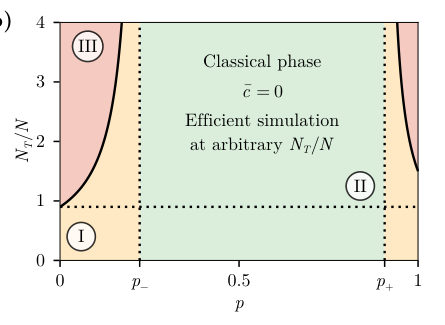
<figcaption class="paper-figure-caption"><b>Fig 1.</b> FIG. 1. Noisy doped random Clifford circuits and their phase diagram. (a) One of the NT layers: a global random Clifford C acting on the N qubits, followed by the non-Clifford ro- tation Uϕ and by the local noise channel N, both applied to the first qubit. (b) Sketch of the phase diagram in the plane of the noise strength p and of the non-Clifford density NT /N. Between the threshold probabilities p± (vertical dot- ted lines) the optimal unraveling has ¯c = 0: the trajectories stay Clifford-disentanglable at arbitrary depth and the cir- cuit is in the noise-induced classical phase (II). Outside this window, disentangling is possible only below the boundary NT ∼N/¯c (solid line), which...</figcaption>
</figure>
<figure class="paper-figure-card">
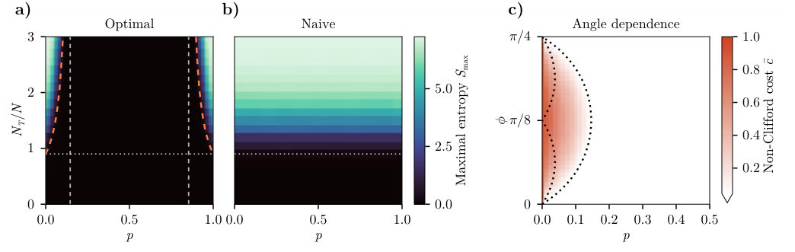
<figcaption class="paper-figure-caption"><b>Fig 2.</b> FIG. 3. CAMPS simulations for aligned dephasing, with N = 16 qubits and ϕ = −π/8. (a) Maximal entanglement entropy Smax of the inner MPS for the optimal unraveling of Theorem 1, as a function of the dephasing probability p and of the non-Clifford density NT /N. The orange dashed line is the predicted boundary NT ∼N/¯c, the vertical white dashed lines mark the threshold probabilities p± enclosing the classical phase, and the horizontal one the closed-system threshold NT ∼N. (b) The same quantity for the naive unraveling K1 = T, K2 = ZT: no classical phase appears and disentangling is lost at NT ∼N for every p. (c) Optimal cost ¯c of Eq. (10) as a function of p and of the rotation angle ϕ,...</figcaption>
</figure>
<figure class="paper-figure-card">
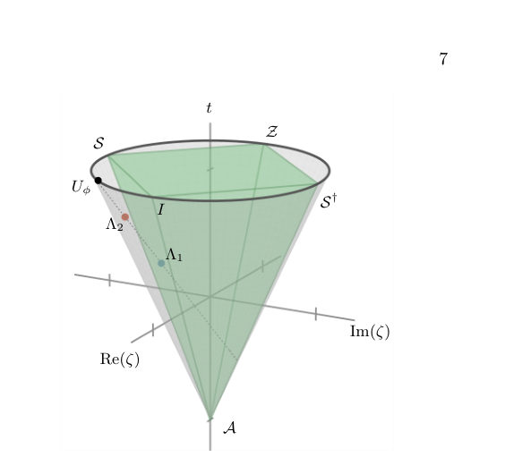
<figcaption class="paper-figure-caption"><b>Fig 3.</b> FIG. 4. Geometric representation for Pauli noise isotropic on the equatorial plane. After the symmetrization of Sec- tion IV B 1, every channel is a point (ζ, t) of the cone C of Eq. (21): its base circle at t = 1 collects the rotations about the z axis, among them the gate Uϕ, and its apex is the Clif- ford mixture A = (X + Y)/2. The channels of zero cost fill the inscribed Clifford pyramid P of Eq. (22) (shaded), with base vertices I, S, Z, S† and apex A. As in Fig. 2, Λ1 lies inside the pyramid and has ¯c = 0, while Λ2 lies outside it and has ¯c &gt; 0.</figcaption>
</figure>
<figure class="paper-figure-card">
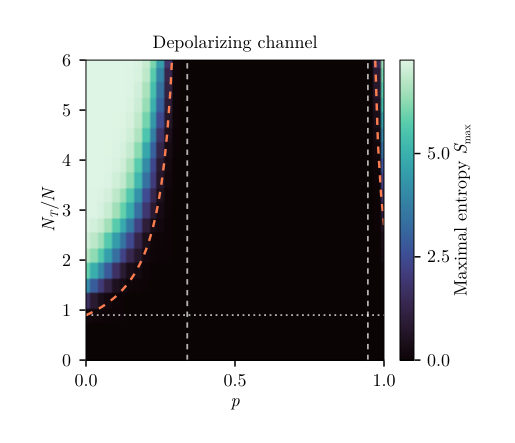
<figcaption class="paper-figure-caption"><b>Fig 4.</b> FIG. 5. CAMPS simulations for depolarizing noise, p⊥= pz = p/3, for the same circuit as in Fig. 3. Maximal en- tanglement entropy Smax of the inner MPS as a function of p and NT /N, with the boundary NT ∼N/¯c predicted by Theorem 2 (orange dashed line), the threshold probabilities enclosing the classical phase (vertical white dashed lines) and the closed-system threshold NT ∼N (horizontal dotted line). Differently from aligned dephasing, the two regions of nonzero cost are asymmetric, since no Clifford operator maps Np onto N1−p.</figcaption>
</figure>
<figure class="paper-figure-card">
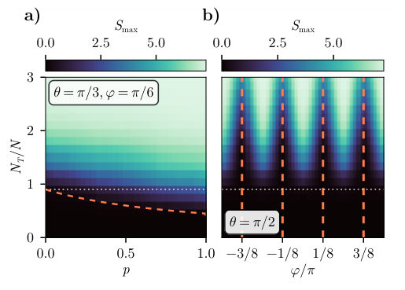
<figcaption class="paper-figure-caption"><b>Fig 5.</b> FIG. 6. CAMPS simulations for tilted dephasing with ϕ = −π/8, using the unraveling obtained by solving Eq. (31) numerically. (a) Maximal entanglement entropy Smax for the generic noise axis (θ, φ) = (π/3, π/6), as a function of p and NT /N: noise now hinders the simulation, and the predicted boundary (orange dashed line) falls below the closed-system threshold NT ∼N (horizontal white dotted line). (b) Smax for a noise axis lying on the equatorial plane, θ = π/2, as a function of its azimuth φ: every equatorial axis remains dis- entanglable at least up to NT ∼N, and the effect is maximal at φ = ±π/8, ±3π/8 (vertical dotted lines), where ˆn · ˆσ and Uϕ compose into a single Clifford...</figcaption>
</figure>
</div>

<p><strong>Summary.</strong> This paper studies how noise affects the classical simulability of quantum circuits by analyzing the optimal way to 'unravel' the noisy dynamics into stochastic trajectories. It discovers that noise can create extended 'classical phases' where the system behaves classically, but this classicality is an artifact of the measurement process, not the underlying channel itself. This work provides a resource-theoretic framework for understanding the limits of classical simulation in open quantum systems.</p>
<p><strong>Why it may be interesting.</strong> This work directly addresses the resource theory of quantum computation, showing how measurement choices (unraveling) can artificially induce classicality, which is highly relevant for understanding decoherence and measurement-induced phase transitions in open quantum systems.</p>
<details>
<summary>Detailed structure</summary>
<p><strong>Main problem.</strong> The paper investigates the boundary between quantum dynamics that are classically simulable and those that require true quantum computation, particularly in the presence of noise.</p>
<p><strong>Main result.</strong> It identifies 'noise-induced classical phases'—parameter regions where the dynamics become fully disentangled by Clifford operations, depending crucially on the measurement scheme (unraveling) used.</p>
<p><strong>Method.</strong> The authors analyze open quantum dynamics by unraveling them into stochastic quantum trajectories, simulating these using Clifford-augmented matrix product states, and minimizing a derived 'simulation cost.'</p>
<p><strong>Model / system.</strong> The model involves random quantum circuits composed of Clifford gates, non-Clifford phase rotations, and local noise, studied via the evolution of the density matrix.</p>
<p><strong>Key observables.</strong> Simulation cost ($ar{c}$), entanglement, nonstabilizerness, and the optimal unraveling choice.</p>
<p><strong>Important parameters / regimes.</strong> Noise strength ($p$), non-Clifford density, and the circuit depth ($N_T$).</p>
<p><strong>Assumptions / limitations.</strong> The analysis relies on finding an optimal convex decomposition of the quantum channel and assumes the ability to define an optimal unraveling that minimizes the simulation cost.</p>
<p><strong>Figures summary.</strong> Figure 1 sketches the noisy circuit setup and a phase diagram showing three dynamical regions separated by phase boundaries. Other figures illustrate the geometric structure of the channel in the complex plane.</p>
<p><strong>Paper structure.</strong> The paper progresses by defining the problem using noisy random circuits, developing the resource-based simulation cost ($ar{c}$), analytically determining the optimal unraveling, and contrasting the results obtained from trajectory-based measurements versus the averaged density matrix.</p>
</details>
<details>
<summary>Abstract</summary>
<p>We study the classical simulability of open quantum dynamics using random Clifford circuits doped with non-Clifford phase rotations and subject to local noise. We unravel the dynamics into stochastic quantum trajectories simulated with Clifford-augmented matrix product states, and introduce a simulation cost that quantifies the classical resources required. Optimizing this cost over stochastic unravelings, we identify noise-induced classical phases: extended parameter regions in which the dynamics can be fully disentangled by Clifford operations at arbitrary circuit depth. Their existence depends on both the noise model \emph{and} the unraveling. Using a geometric representation of quantum channels, we analytically determine optimal unravelings for a broad class of noise models, with numerical simulations confirming the predicted phase boundaries. We further relate the optimal cost to the unraveling-independent nonstabilizerness of the channel and show that, together with trajectory-resolved entanglement and nonstabilizerness, it classifies distinct dynamical regimes. Finally, we show that these classical phases disappear in the averaged density-matrix description, where no unraveling freedom remains. Our results show that the emergence of classicality in noisy random circuits depends on the measurement scheme adopted to probe it, and paves the way to further studies on the classical simulability of driven-dissipative dynamics.</p>
</details>
<p><sub><a href="#top">↑ back to top</a></sub></p>

<p><a id="paper-2609.16544"></a></p>
<h3 id="partial-projected-ensembles-reveal-slow-tilt-constrained-information-spreading"><a href="http://arxiv.org/abs/2609.16544v1">Partial projected ensembles reveal slow tilt-constrained information spreading</a></h3>
<p><strong>Authors:</strong> Yi-Rui Zhang, Yu-Jun Zhao, Han-Ze Li, Jian-Xin Zhong<br>
<strong>Type:</strong> theory · <strong>Category:</strong> other · <strong>PDF:</strong> <a href="https://arxiv.org/pdf/2609.16544v1">https://arxiv.org/pdf/2609.16544v1</a><br>
<strong>Analysis basis:</strong> full PDF text, analyzed in chunks
<strong>Topic relevance:</strong> 🔥 <code>scars &amp; prethermalization</code> <strong>4/5</strong> · <code>non-equilibrium universality</code> <strong>3/5</strong> · <code>quantum measurements</code> <strong>3/5</strong> · <code>analog quantum simulation</code> <strong>2/5</strong> · <code>methods for driven-dissipative</code> <strong>2/5</strong> · <code>Frenkel-Kontorova</code> <strong>1/5</strong> · <code>driven-dissipative phase transition</code> <strong>1/5</strong></p>
<div class="figure-strip-hint">↔ Scroll figures horizontally</div>
<div class="paper-figures-scroll">
<figure class="paper-figure-card">
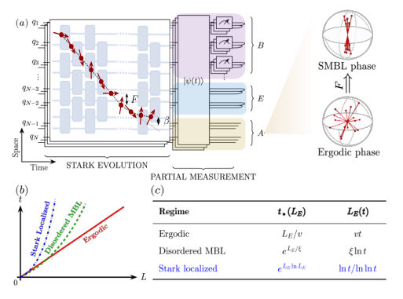
<figcaption class="paper-figure-caption"><b>Fig 1.</b> FIG. 1. Partial observation and proposed spreading laws. (a) Evolution in a Stark field with control parameter F and curvature β, followed by measurement of B and tracing out the buffer E, produces conditional states on A. Bloch spheres illustrate their distributions. (b),(c) Ballistic, logarithmic, and proposed sublogarithmic spreading correspond to linear, exponential, and factorial-type onset times versus buffer length LE.</figcaption>
</figure>
<figure class="paper-figure-card">
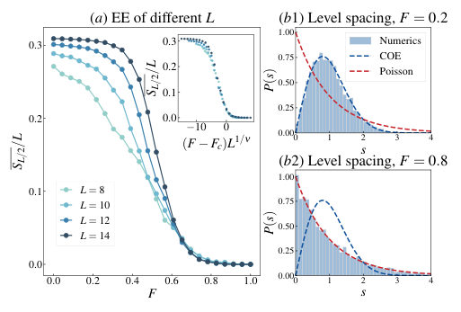
<figcaption class="paper-figure-caption"><b>Fig 2.</b> FIG. 2. Regime diagnostics. (a) Half-chain von Neumann entropy, averaged over all Floquet eigenstates and divided by L, versus control parameter F. Inset: rescaling with Fc = 0.651 and ν = 0.84. (b1),(b2) Normalized circular quasienergy- spacing distributions for L = 12 at F = 0.2 and 0.8; dashed curves show circular-orthogonal-ensemble (COE) and Poisson benchmarks. Entropies use natural logarithms.</figcaption>
</figure>
<figure class="paper-figure-card">
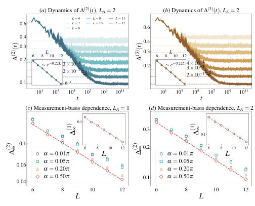
<figcaption class="paper-figure-caption"><b>Fig 3.</b> FIG. 3. Full projected ensembles at F = 0.8, averaged over 1000 random product states; t counts Floquet periods. (a),(b) Second- and third-moment trace distances ∆(k) to the initial- state-specific Scrooge reference, with LA = 2 and X-basis measurements. (c),(d) Residual second-moment distances versus L and measurement angle α for LA = 1,2; insets show first moments. Here α = π/2 is the X basis. Residuals and horizontal dashed lines use the last 200 saved times; inset lines in (a),(b) and dashed curves in (c),(d) are exponential fits.</figcaption>
</figure>
<figure class="paper-figure-card">
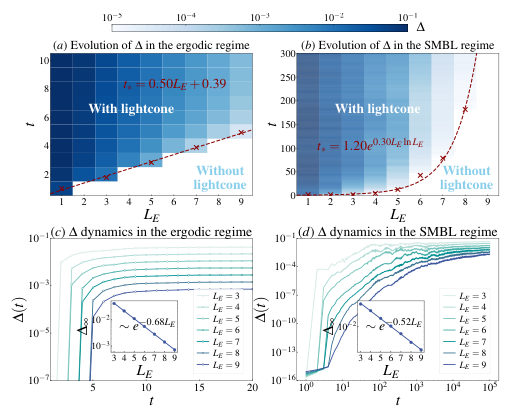
<figcaption class="paper-figure-caption"><b>Fig 4.</b> FIG. 4. PPE connected second-moment trace distance ∆ for LA = 1, LB = 6, L = LE + 7, and X-basis measurement of B, averaged over 1000 random product states. (a),(c) F = 0.2; (b),(d) F = 0.8. Heatmaps show ∆(t,LE); crosses mark the 10−5 onset threshold and red dashed curves are the displayed fits. The light-cone labels distinguish the two sides of this threshold. Insets in (c),(d) show residuals at t = 20 and averaged over the last 200 saved times, respectively, with exponential fits. Time is in Floquet periods.</figcaption>
</figure>
<figure class="paper-figure-card">
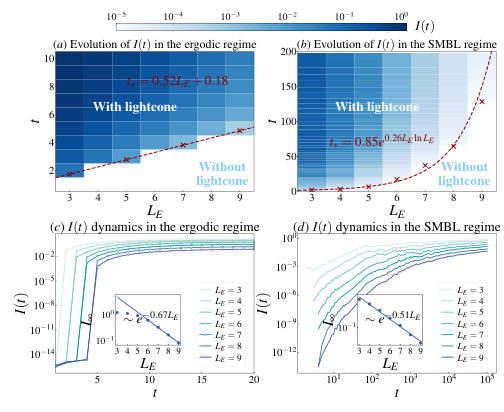
<figcaption class="paper-figure-caption"><b>Fig 5.</b> FIG. 5. Premeasurement quantum mutual information I = SA +SB −SAB, using natural logarithms, with LA = 1, LB = 6, and L = LE + 7. Results average 1000 random product states; t counts Floquet periods. (a),(c) F = 0.2; (b),(d) F = 0.8. Crosses mark I = 10−5 and red dashed curves are onset fits. Insets show I(t = 20) in (c) and the mean over the last 20 saved times in (d), with exponential fits. The 0.67 fit uses LE = 6–9; the 0.51 fit uses LE = 3–9 and describes a finite-time average.</figcaption>
</figure>
</div>

<p><strong>Summary.</strong> This paper analyzes quantum information spreading in a kicked Ising chain by using partial projected ensembles (PPEs). It finds that spatial constraints cause a dramatic difference in how fast correlations build up between ergodic and tilt-constrained regimes. The research provides an information-theoretic tool to distinguish between the physical time needed for correlations to develop and the information that can actually be measured when parts of the system are unobserved.</p>
<p><strong>Why it may be interesting.</strong> This work directly addresses non-equilibrium dynamics and information scrambling in systems exhibiting localization or strong disorder, which are central topics in condensed matter theory, particularly concerning Many-Body Localization (MBL) physics.</p>
<details>
<summary>Detailed structure</summary>
<p><strong>Main problem.</strong> The paper investigates how spatial constraints affect the emergence of quantum information about many-body dynamics, specifically comparing the time required for correlations to develop versus the information accessible under partial observation.</p>
<p><strong>Main result.</strong> Partial projected ensembles reveal a strong contrast in correlation onset times between ergodic and tilt-constrained regimes, with the latter showing a significantly delayed buildup. The study establishes that partial observation probes the distinction between correlation development time and accessible information.</p>
<p><strong>Method.</strong> The authors use numerical simulations on a kicked Ising chain, employing partial projected ensembles (PPEs) and analyzing various information-theoretic diagnostics like quantum mutual information and moment distances.</p>
<p><strong>Model / system.</strong> The system is a kicked Ising chain subjected to a spatially varying longitudinal field, governed by a Floquet evolution operator. The analysis involves partitioning the chain into three regions: a target region (A), an unobserved buffer (E), and a measured region (B).</p>
<p><strong>Key observables.</strong> Conditional-state fluctuations, quantum mutual information, connected second moment, and the onset time ($t^*$) for correlation buildup.</p>
<p><strong>Important parameters / regimes.</strong> The control parameter $\Gamma$ (related to kick strength and Stark tilt), buffer length ($L_E$), and the comparison between the ergodic and tilt-constrained regimes.</p>
<p><strong>Assumptions / limitations.</strong> The analysis relies on the mathematical framework of projected ensembles and assumes the applicability of specific information-theoretic bounds ($\Delta \le \chi \le I_q$).</p>
<p><strong>Figures summary.</strong> Figures illustrate the comparison of correlation onset times ($t^*$) in ergodic vs. Stark-constrained regimes, the decay of moment distances ($\Delta(k)$) with buffer length, and the evolution of mutual information ($I$) over time.</p>
<p><strong>Paper structure.</strong> The paper introduces the concept of PPEs to probe information beyond the reduced density matrix. It analyzes the dynamics in two distinct regimes (ergodic vs. tilt-constrained), deriving quantitative scaling laws for the onset of correlations and demonstrating the separation of phase accumulation and coherence loss using a solvable dephasing model.</p>
</details>
<details>
<summary>Abstract</summary>
<p>Projected ensembles reveal information about quantum many-body dynamics beyond the reduced density matrix. Here we investigate how spatial constraints affect the emergence of this information in a kicked Ising chain with a spatially varying longitudinal field. We consider partial projected ensembles, obtained by measuring a remote region while leaving an intervening buffer unobserved. Our numerical results reveal a pronounced contrast between nearly ballistic correlation onset in the ergodic regime and strongly delayed onset in the tilt-constrained regime, corroborated by quantum mutual information. Despite these different onset scales, the conditional-state fluctuations decrease approximately exponentially with buffer length in both regimes. Full projected ensembles additionally exhibit slow relaxation and persistent measurement-basis dependence in their higher moments. We establish an information-theoretic characterization of the connected second moment and use a solvable dephasing model with effective-basis measurements to illustrate the separation of phase accumulation and coherence loss. Within this model, a factorially suppressed coupling envelope yields sublogarithmic spreading consistent with the finite-distance onset trends. Our results identify partial projected ensembles as probes of the distinction between the time required for correlations to develop and the information that remains accessible under partial observation.</p>
</details>
<p><sub><a href="#top">↑ back to top</a></sub></p>

<p><a id="paper-2609.17165"></a></p>
<h3 id="phase-stable-voltage-bias-for-josephson-photonics-devices"><a href="http://arxiv.org/abs/2609.17165v1">Phase-stable voltage bias for Josephson photonics devices</a></h3>
<p><strong>Authors:</strong> Amir Hosein Esmaeili, Naveen Nehra, Alexandre Paquette, Mona Arabmohammadi, Baptiste Monge, Alexandre Rogalle, Francois Cyrenne-Bergeron, Yannick Lapointe, Nicolas Lavoie, Nicolas Bourlet, Max Hofheinz<br>
<strong>Type:</strong> experiment · <strong>Category:</strong> other · <strong>PDF:</strong> <a href="https://arxiv.org/pdf/2609.17165v1">https://arxiv.org/pdf/2609.17165v1</a><br>
<strong>Analysis basis:</strong> full PDF text, analyzed in chunks
<strong>Topic relevance:</strong> 🔥 <code>quantum optics experiment</code> <strong>4/5</strong> · <code>driven-dissipative phase transition</code> <strong>3/5</strong> · <code>methods for driven-dissipative</code> <strong>2/5</strong> · <code>quantum measurements</code> <strong>2/5</strong> · <code>Keldysh / 2PI / non-Gaussian methods</code> <strong>1/5</strong> · <code>QC/QI experiment</code> <strong>1/5</strong> · <code>analog quantum simulation</code> <strong>1/5</strong> · <code>interference shaping light</code> <strong>1/5</strong> · <code>non-equilibrium universality</code> <strong>1/5</strong></p>
<div class="figure-strip-hint">↔ Scroll figures horizontally</div>
<div class="paper-figures-scroll">
<figure class="paper-figure-card">
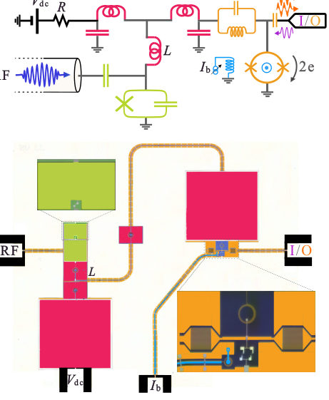
<figcaption class="paper-figure-caption"><b>Fig 1.</b> Fig. 1. Integrated JVS-biased ICTA device. (a) Cir- cuit schematic of the device containing the JVS, ICTA, and superconducting low-pass filter. The JVS consists of a Joseph- son junction in parallel with a capacitor (shown in green) it is dc biased with a voltage Vdc through a source impedance R = 5 Ωand an RF tone is capacitively coupled. The ICTA comprises a single lumped-element resonator grounded by a SQUID (shown in orange) whose magnetic flux is controlled by an on-chip flux-bias line (shown in blue). Input signals are sent through a capacitively coupled I/O port and get ampli- fied in reflection. The two devices are connected via a low-pass filter (shown in red), isolating the two...</figcaption>
</figure>
<figure class="paper-figure-card">
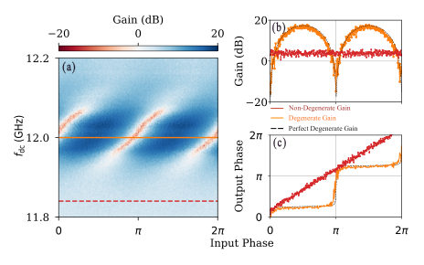
<figcaption class="paper-figure-caption"><b>Fig 2.</b> Fig. 3. Phase-dependence of gain. (a) Gain map as a function of input signal phase and bias (fdc). The map clearly delineates the transition from the phase-preserving regime to the phase-sensitive regime within the JVS locking range (11.95 GHz to 12.05 GHz). (b) One-dimensional gain cuts in the locking range (fdc ≈fJVS = 12 GHz, orange) and out- side the locking range (fdc = 11.85 GHz, red). The gain in the locking range shows the characteristic π-periodicity of a degenerate parametric amplifier, with an amplification range of ±17 dB, whereas the unlocked response remains phase- independent at 7 dB. (c) Output phase response correspond- ing to the measurements in panel (b). In the...</figcaption>
</figure>
<figure class="paper-figure-card">
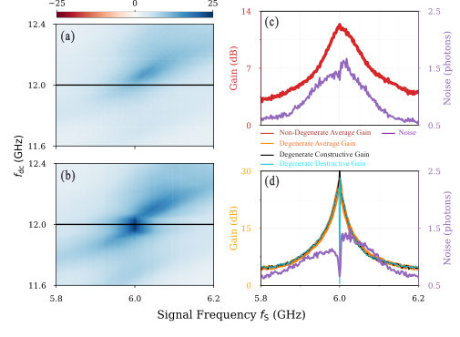
<figcaption class="paper-figure-caption"><b>Fig 3.</b> Fig. 2. Comparison of ICTA without and with JVS stabilization. All data were acquired at a constant ICTA critical current Ic ≈80 nA. (a) Two-dimensional gain map of the unstabilized ICTA (JVS RF tone off) as a function of signal frequency (fS) and voltage bias expressed as Joseph- son frequency (fdc); gain is maximal near the LC resonance (f0 = 6 GHz). (b) Corresponding two-dimensional gain map with the JVS activated (JVS RF tone fJVS = 12 GHz, PJVS = −65 dBm), locking the actual Josephson frequency at 12 GHz over a ±50 MHz bias range. (c) Cut of panel (a) at fdc = 12 GHz showing gain of up to 13 dB with a band- width of ∼80 MHz (red curve) and an input-referred noise of ∼1.5 photons...</figcaption>
</figure>
<figure class="paper-figure-card">
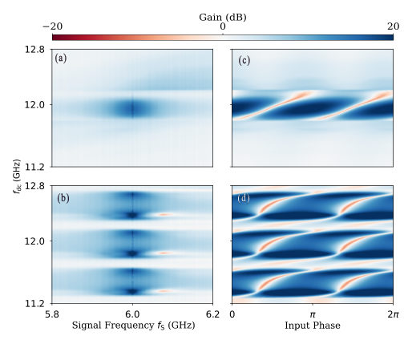
<figcaption class="paper-figure-caption"><b>Fig 4.</b> Fig. 4. Gain modulation within the JVS locking range. (a, b) Magnitude gain of the ICTA as a function of bias fdc and signal frequency fS for two distinct JVS RF drive powers. At PJVS = −55 dBm (a), a single gain-modulation period is observed across the locking range. Increasing the RF power (b) to −43 dBm broadens the locking range, revealing three distinct periods. The observed frequency periodicity ∆fdc = 0.5 GHz is consistent with a current-induced inductive phase drop of 2π across the series inductance of the JVS. (c, d) Gain versus input phase and fdc at the degenerate point (fS = fdc/2). At lower RF power (c), the system exhibits a stable, nearly linear phase evolution. At higher RF...</figcaption>
</figure>
<figure class="paper-figure-card">
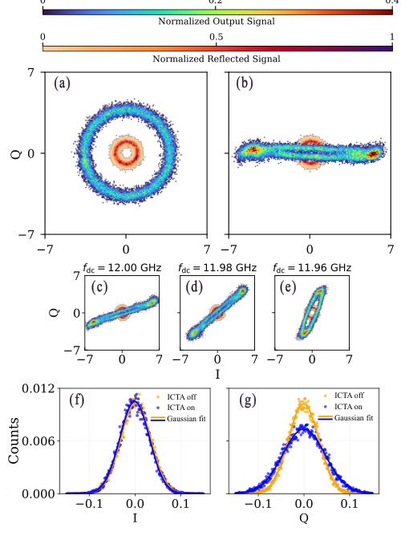
<figcaption class="paper-figure-caption"><b>Fig 5.</b> Fig. 5. System characterization in phase space. In all panels, the input signal power is fixed at −120 dBm, while its phase is swept. The reflected input state (red) is captured with both the ICTA and JVS deactivated. The JVS is driven by a −65 dBm RF tone. In panels (a–e), bins representing less than 1% of the peak histogram value are masked. (a) Phase-preserving amplification of a coherent state with the JVS deactivated. The amplified output (blue, ICTA active) exhibits a circular symmetric distribution, indicating uniform gain across both quadratures. (b) Phase-sensitive response with the JVS activated. The output distribution becomes el- liptical, confirming quadrature-dependent...</figcaption>
</figure>
</div>

<p><strong>Summary.</strong> The researchers developed a novel architecture by coupling a Josephson Voltage Standard (JVS) to a Josephson Photonics amplifier (ICTA) to solve the problem of phase noise. This integration successfully establishes a stable phase reference, leading to a significant gain enhancement and enabling the first demonstration of phase-sensitive quantum effects like squeezing in a dc-biased superconducting amplifier.</p>
<p><strong>Why it may be interesting.</strong> This work directly addresses the challenge of phase coherence in superconducting quantum circuits, which is crucial for realizing high-fidelity quantum light sources and parametric processes.</p>
<details>
<summary>Detailed structure</summary>
<p><strong>Main problem.</strong> Conventional parametric pumping methods suffer from parasitic nonlinearities, and existing Josephson Photonics (JP) devices lack a stable phase reference necessary for phase-coherent operation.</p>
<p><strong>Main result.</strong> By integrating a Josephson Voltage Standard (JVS) to provide a noise-tolerant phase reference, the authors achieved a 14-dB gain enhancement and enabled the first observation of phase-sensitive gain and squeezing in a dc-biased amplifier.</p>
<p><strong>Method.</strong> The study involves characterizing the Interacting Cavity Transmission Amplifier (ICTA) using gain maps and phase-space analysis, comparing performance with and without the active JVS reference.</p>
<p><strong>Model / system.</strong> The system utilizes Josephson Junctions forming an ICTA, which is coupled to a JVS. The physics is described by Josephson junction potentials and analyzed using quantum Langevin equations and phase-space diagnostics.</p>
<p><strong>Key observables.</strong> Averaged gain (up to 27 dB), quantum-limited noise performance, phase-sensitive gain, and squeezing characteristics.</p>
<p><strong>Important parameters / regimes.</strong> DC bias voltage, RF tone power ($P_{JVS}$), signal frequency ($f_S$), and the phase difference ($\Delta$) between the signal and the phase reference.</p>
<p><strong>Assumptions / limitations.</strong> The phase reference from the JVS is assumed to be coherently transferred to the ICTA via the superconducting order parameter, and phase noise averaging is assumed when the JVS is off.</p>
<p><strong>Figures summary.</strong> Figures compare ICTA gain and noise with and without JVS stabilization, showing phase-space distributions that transition from phase-preserving (JVS off) to phase-sensitive (JVS on).</p>
<p><strong>Paper structure.</strong> The paper first identifies the limitations of JP devices, then introduces the JVS-ICTA architecture. It proceeds to characterize the gain and noise in different regimes (degenerate vs. non-degenerate), demonstrating the critical role of the JVS in stabilizing the phase reference and enabling phase-sensitive quantum effects.</p>
</details>
<details>
<summary>Abstract</summary>
<p>Parametric interactions are foundational to superconducting quantum technologies, yet conventional microwave-driven pumping introduces parasitic Kerr nonlinearities and higher-order harmonics that limit device performance. Josephson Photonics (JP) avoids these parasitics by utilizing dc-biased junctions but has remained constrained by high phase noise and the absence of a stable phase reference. Here, we overcome this limitation by integrating a Josephson voltage standard (JVS) to establish a noise-tolerant phase reference, and demonstrate that this reference is coherently transferred to an inelastic Cooper-pair tunneling amplifier (ICTA) via the superconducting order parameter.The resulting low-phase-noise architecture yields a 14-dB enhancement in averaged gain and better quantum-limited noise performance. Critically, the phase reference enables the first observation of phase-sensitive gain and sqeezing in a dc-biased amplifier. By reconciling clean, Kerr-free nonlinearities with phase-coherent drive, our architecture establishes a robust platform for high-purity parametric processes in superconducting circuits.</p>
</details>
<p><sub><a href="#top">↑ back to top</a></sub></p>

<p><a id="paper-2609.16352"></a></p>
<h3 id="qdmag-a-python-package-for-simulating-nonequilibrium-magnetization-of-molecules-using-quantum-master-equations"><a href="http://arxiv.org/abs/2609.16352v1">qdmag: A Python package for simulating nonequilibrium magnetization of molecules using quantum master equations</a></h3>
<p><strong>Authors:</strong> Shuanglong Liu, Xiao Chen, Andrew Cupo, James N. Fry, Hai-Ping Cheng<br>
<strong>Type:</strong> theory · <strong>Category:</strong> other · <strong>PDF:</strong> <a href="https://arxiv.org/pdf/2609.16352v1">https://arxiv.org/pdf/2609.16352v1</a><br>
<strong>Analysis basis:</strong> full PDF text, analyzed in chunks
<strong>Topic relevance:</strong> 🔥 <code>methods for driven-dissipative</code> <strong>4/5</strong> · <code>driven-dissipative phase transition</code> <strong>3/5</strong> · <code>Keldysh / 2PI / non-Gaussian methods</code> <strong>2/5</strong> · <code>non-equilibrium universality</code> <strong>2/5</strong> · <code>quantum measurements</code> <strong>2/5</strong> · <code>analog quantum simulation</code> <strong>1/5</strong> · <code>correlated / nonlocal dissipation</code> <strong>1/5</strong> · <code>scars &amp; prethermalization</code> <strong>1/5</strong></p>
<div class="figure-strip-hint">↔ Scroll figures horizontally</div>
<div class="paper-figures-scroll">
<figure class="paper-figure-card">
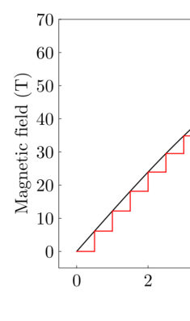
<figcaption class="paper-figure-caption"><b>Fig 1.</b> Figure 1: Illustration of the staircase function used to approximate the continuous varia- tion of magnetic field with time.</figcaption>
</figure>
<figure class="paper-figure-card">
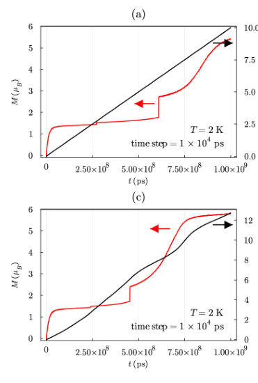
<figcaption class="paper-figure-caption"><b>Fig 2.</b> Figure 2: Four different magnetic field profiles and the corresponding magnetization versus time for Ho(pzdo)4. Parameters used in calculations: sweep rate = 10 T/ms for the linear function in the panel (a); Turning points (1 µs, 0.1 T), (10 µs, 1 T), (100 µs, 5 T), and (1000 µs, 10 T) for the piecewise linear function in the panel (b); The cubic spline in the panel (c) is fitted to the experimental data2; An amplitude of 0.1 T and a period of 46.8 ps for the sinusoidal function in the panel (d). The temperature and time step are marked in the bottom right corner of each panel. I0 = 1 × 10−14 ps · rad−1 is used in all calculations.</figcaption>
</figure>
<figure class="paper-figure-card">
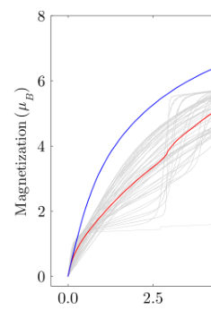
<figcaption class="paper-figure-caption"><b>Fig 3.</b> Figure 3: Magnetization versus magnetic field before and after powder average. The equilibrium magnetization was given for comparison. Parameters used in calculations: T = 2 K, I0 = 1 × 10−14 ps · rad−1, sweep rate = 10 T/ms, and time step 1 × 104 ps.</figcaption>
</figure>
<figure class="paper-figure-card">
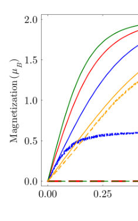
<figcaption class="paper-figure-caption"><b>Fig 4.</b> Figure 4: Magnetization versus magnetic field using different exchange coupling tensors for a dimer. Parameters used in calculations: T = 0.2 K, I0 = 1 × 10−10 ps · rad−1, sweep rate = 10 T/ms, and time step = 1 × 104 ps.</figcaption>
</figure>
<figure class="paper-figure-card">
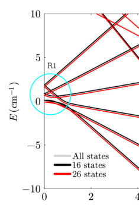
<figcaption class="paper-figure-caption"><b>Fig 5.</b> Figure 5: Zeeman energy diagram for (CH6N3)2MnCl4 using the full spin Hamiltonian and two effective Hamiltonians. The energies are offset slightly to show the overlapping lines. Gray lines underlie every black or red line. Four regions in the plot are highlighted by cyan circles.</figcaption>
</figure>
</div>

<p><strong>Summary.</strong> This paper presents qdmag, a Python package designed to simulate the time evolution of magnetization in magnetic molecules. It solves the quantum master equation, incorporating complex spin Hamiltonians and spin-phonon coupling effects. The tool is valuable for studying non-equilibrium spin dynamics in molecular nanomagnets under realistic, time-varying field conditions.</p>
<p><strong>Why it may be interesting.</strong> This work is highly relevant as it provides a specialized, robust numerical tool for simulating open quantum dynamics in molecular magnets, which is a core area of AMO physics and quantum magnetism.</p>
<details>
<summary>Detailed structure</summary>
<p><strong>Main problem.</strong> The paper addresses the simulation of nonequilibrium magnetization dynamics in magnetic molecules subjected to time-varying external magnetic fields and spin-phonon coupling.</p>
<p><strong>Main result.</strong> The authors introduce qdmag, a computational package capable of simulating magnetization over long timescales, providing a tool to bridge theory and numerical calculation for spin dynamics.</p>
<p><strong>Method.</strong> The dynamics are governed by solving the generalized Lindblad quantum master equation, utilizing a staircase approximation for time-varying fields and constructing effective Hamiltonians for computational feasibility.</p>
<p><strong>Model / system.</strong> The system involves magnetic molecules whose spin Hamiltonian includes magnetic exchange interactions and Zero-Field Splitting (ZFS) terms. The dynamics are treated as an open quantum system coupled to a phonon bath, described by the Lindblad master equation.</p>
<p><strong>Key observables.</strong> Nonequilibrium magnetization $M(t)$ and occupation numbers of energy levels.</p>
<p><strong>Important parameters / regimes.</strong> Phonon bath spectral density parameters ($\alpha$), external magnetic field strength and time variation rate, and coupling constants ($\lambda$).</p>
<p><strong>Assumptions / limitations.</strong> The package assumes the external magnetic field direction remains unchanged during the sweep, and calculations for high-dimensional systems rely on constructing lower-dimensional effective Hamiltonians.</p>
<p><strong>Figures summary.</strong> Figures illustrate the staircase function for field approximation, and case studies show magnetization plateaus and Rabi oscillations in single-spin systems.</p>
<p><strong>Paper structure.</strong> The paper introduces the theoretical framework (Hamiltonian decomposition, Lindblad equation), details the numerical methods (staircase approximation, effective basis construction), and validates the tool through multiple case studies (one-spin, two-spin, three-spin systems).</p>
</details>
<details>
<summary>Abstract</summary>
<p>We present qdmag, a computational utility for calculating the magnetization of magnetic molecules in a time-varying external magnetic field by solving a generalized Lindblad quantum master equation with spin-phonon coupling treated as a dissipation term. The package relies on the spin Hamiltonian formalism, which includes both the magnetic exchange interactions and the zero-field splitting (ZFS) interaction. Different types of magnetic exchange interaction and ZFS terms up to 12th order, which are written in terms of the extended Stevens operators, are supported. qdmag enables long-time evolution of magnetization for up to a few milliseconds, which is achieved through a staircase approximation of the magnetic field as a function of time. For high-dimensional spin Hamiltonians, a lower-dimensional effective Hamiltonian is constructed to make the calculations computationally feasible. Three case studies of one-spin, two-spin, and three-spin systems are presented to demonstrate the usage of qdmag. Our work offers a computational tool to bridge the gap between theoretical development and numerical calculations of spin dynamics in the presence of spin-phonon coupling.</p>
</details>
<p><sub><a href="#top">↑ back to top</a></sub></p>

<p><a id="paper-2609.17490"></a></p>
<h3 id="query-optimal-quantum-simulation-of-lindblad-evolution"><a href="http://arxiv.org/abs/2609.17490v1">Query-optimal quantum simulation of Lindblad evolution</a></h3>
<p><strong>Authors:</strong> Chunhao Wang, Christopher Ye<br>
<strong>Type:</strong> theory · <strong>Category:</strong> quantum information and computing · <strong>PDF:</strong> <a href="https://arxiv.org/pdf/2609.17490v1">https://arxiv.org/pdf/2609.17490v1</a><br>
<strong>Analysis basis:</strong> full PDF text, analyzed in chunks
<strong>Topic relevance:</strong> 🔥 <code>methods for driven-dissipative</code> <strong>4/5</strong> · <code>correlated / nonlocal dissipation</code> <strong>3/5</strong> · <code>driven-dissipative phase transition</code> <strong>3/5</strong> · <code>analog quantum simulation</code> <strong>2/5</strong> · <code>non-equilibrium universality</code> <strong>2/5</strong> · <code>Keldysh / 2PI / non-Gaussian methods</code> <strong>1/5</strong> · <code>quantum measurements</code> <strong>1/5</strong></p>
<div class="figure-strip-hint">↔ Scroll figures horizontally</div>
<div class="paper-figures-scroll">
<figure class="paper-figure-card">
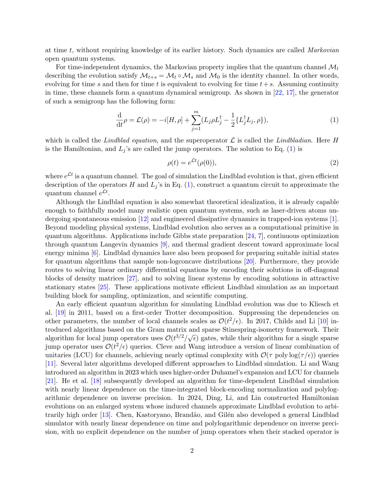
<figcaption class="paper-figure-caption"><b>Fig 1.</b> Low-resolution page preview, page 2</figcaption>
</figure>
<figure class="paper-figure-card">
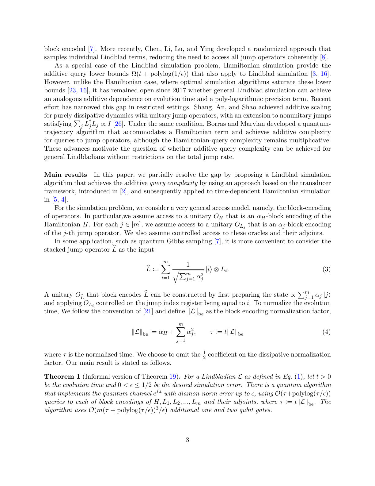
<figcaption class="paper-figure-caption"><b>Fig 2.</b> Low-resolution page preview, page 3</figcaption>
</figure>
<figure class="paper-figure-card">
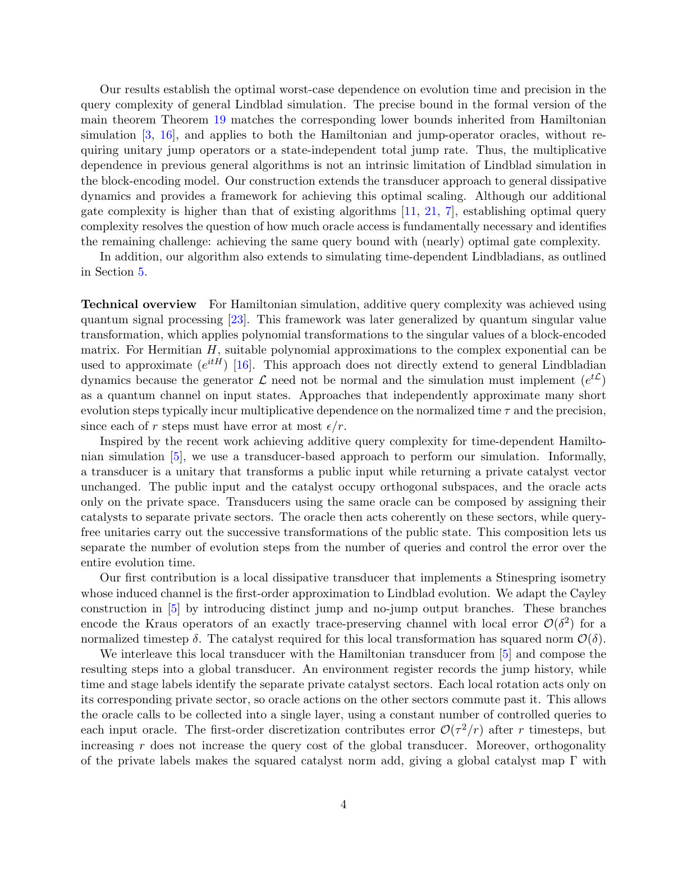
<figcaption class="paper-figure-caption"><b>Fig 3.</b> Low-resolution page preview, page 4</figcaption>
</figure>
<figure class="paper-figure-card">
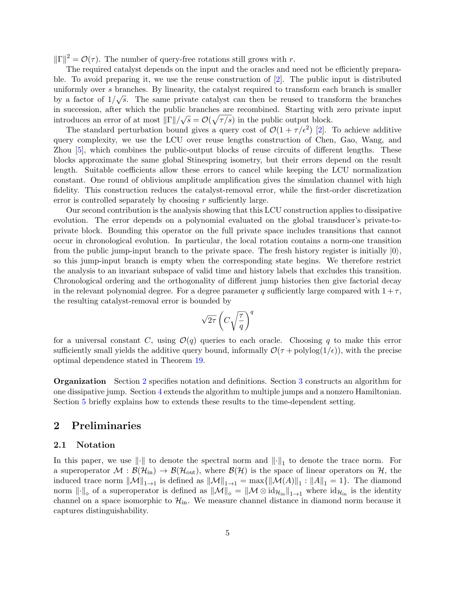
<figcaption class="paper-figure-caption"><b>Fig 4.</b> Low-resolution page preview, page 5</figcaption>
</figure>
<figure class="paper-figure-card">
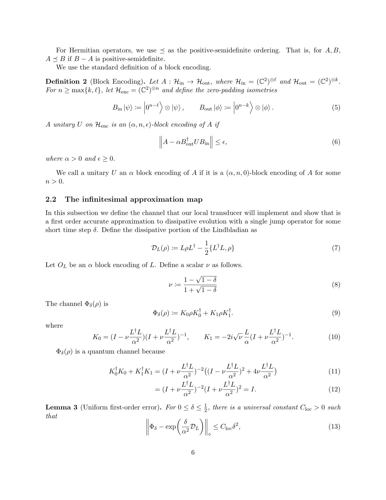
<figcaption class="paper-figure-caption"><b>Fig 5.</b> Low-resolution page preview, page 6</figcaption>
</figure>
</div>

<p><strong>Summary.</strong> This paper develops a quantum circuit algorithm to simulate Lindblad evolution, which models open quantum systems. By using a transducer framework, the authors achieve an optimal additive query complexity, resolving a long-standing question about the necessary scaling of resources. This result is significant for understanding the fundamental computational limits of simulating dissipative quantum dynamics.</p>
<p><strong>Why it may be interesting.</strong> This work directly tackles the resource scaling (query complexity) for simulating open quantum systems, which is crucial for quantum simulation algorithms in AMO physics and quantum optics.</p>
<details>
<summary>Detailed structure</summary>
<p><strong>Main problem.</strong> The paper addresses the fundamental query complexity required to simulate Lindblad evolution for open quantum systems over a given time $t$ to a precision $\epsilon$. It aims to close the gap between the known lower and upper bounds for this simulation.</p>
<p><strong>Main result.</strong> The authors provide an algorithm achieving optimal additive query complexity, $O(	au + 	ext{polylog}(	au/\epsilon))$, for general Lindblad simulation in the block-encoding model. This proves that the multiplicative dependence on time previously suspected was not a fundamental necessity in this model.</p>
<p><strong>Method.</strong> The approach utilizes a transducer framework, combining local dissipative transducers with Hamiltonian transducers, and employs linear combinations of reuse circuits to manage error accumulation.</p>
<p><strong>Model / system.</strong> The system is an open quantum system whose dynamics are governed by the Lindblad master equation. The simulation is implemented using quantum circuits within the block-encoding model.</p>
<p><strong>Key observables.</strong> The primary observable is the approximation of the quantum channel $e^{Lt}$ representing the evolution of the density matrix $
ho$.</p>
<p><strong>Important parameters / regimes.</strong> Key parameters include the evolution time $t$, the desired precision $\epsilon$, and the total evolution time $  au$.</p>
<p><strong>Assumptions / limitations.</strong> The analysis is restricted to the block-encoding model, and the gate complexity of the resulting algorithm is noted to be higher than existing methods.</p>
<p><strong>Paper structure.</strong> The paper builds from the general problem of Lindblad simulation, details the use of transducers for composition, addresses error control (including catalyst-removal error), and extends the method to time-dependent generators.</p>
</details>
<details>
<summary>Abstract</summary>
<p>For the problem of simulating Lindblad evolution for time $t$ to precision $ε$, Hamiltonian simulation provides an additive query lower bound, informally, $Ω(t + \mathrm{polylog}(1/ε))$. However, the best previously known algorithms for general Lindblad simulation achieve a multiplicative upper bound, informally, $\mathcal{O}(t\,\mathrm{polylog}(1/ε))$, in gate complexity. It has remained open whether this multiplicative dependence is necessary. In this paper, we close the gap in query complexity by giving an algorithm with optimal additive dependence on evolution time and precision in the block-encoding model. Our approach uses the transducer framework to reduce the query cost of composing first-order approximations to the evolution channel, together with linear combinations of reuse circuits of different lengths to suppress catalyst-removal error.   Although our additional gate complexity is higher than that of existing algorithms, our optimal query complexity resolves the question of how much oracle access is fundamentally necessary and identifies the remaining challenge to achieve the optimal gate complexity.</p>
</details>
<p><sub><a href="#top">↑ back to top</a></sub></p>

<p><a id="paper-2609.16106"></a></p>
<h3 id="direct-observation-of-dipolar-driven-anisotropic-quantum-projection-noise-in-a-solid-state-spin-ensemble"><a href="http://arxiv.org/abs/2609.16106v1">Direct Observation of Dipolar-Driven Anisotropic Quantum Projection Noise in a Solid-State Spin Ensemble</a></h3>
<p><strong>Authors:</strong> Tasuku Ono, Weijie Wu, Haopu Yang, Lillian B. Hughes Wyatt, Benjamin Brenner, Che Liu, Collin Fan, Chris R. Laumann, Jonathan N. Hallén, Emily J. Davis, Ania C. Bleszynski Jayich, Norman Y. Yao<br>
<strong>Type:</strong> experiment · <strong>Category:</strong> other · <strong>PDF:</strong> <a href="https://arxiv.org/pdf/2609.16106v1">https://arxiv.org/pdf/2609.16106v1</a><br>
<strong>Analysis basis:</strong> full PDF text, analyzed in chunks
<strong>Topic relevance:</strong> 🔥 <code>QC/QI experiment</code> <strong>4/5</strong> · <code>analog quantum simulation</code> <strong>3/5</strong> · <code>quantum measurements</code> <strong>3/5</strong> · <code>Full counting statistics</code> <strong>1/5</strong> · <code>correlated / nonlocal dissipation</code> <strong>1/5</strong> · <code>quantum optics experiment</code> <strong>1/5</strong></p>
<div class="figure-strip-hint">↔ Scroll figures horizontally</div>
<div class="paper-figures-scroll">
<figure class="paper-figure-card">
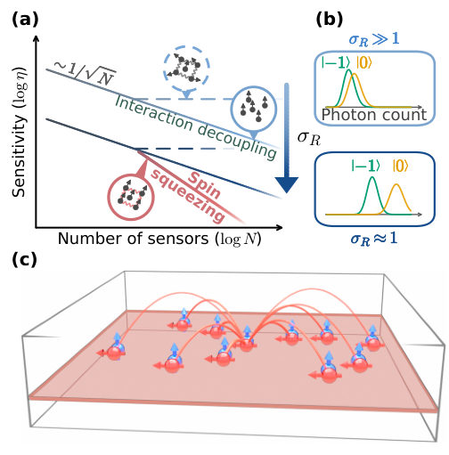
<figcaption class="paper-figure-caption"><b>Fig 1.</b> FIG. 1. (a) Schematic depicting sensitivity as a function of the number of sensors in different regimes. The sensitiv- ity, η ∼σR/√N T2, can be improved by reducing the readout noise σR (light blue to dark blue), by increasing the number of spins N, or by extending the coherence time T2. Beyond a cer- tain density, dipolar interactions between the spins preclude reaching the standard quantum limit (dashed lines) and in- teraction decoupling is required to preserve the 1/ √</figcaption>
</figure>
<figure class="paper-figure-card">
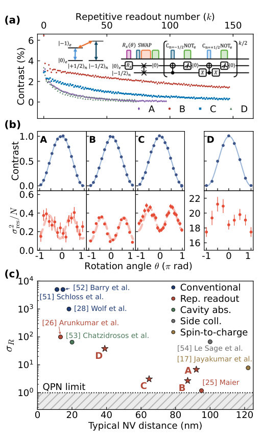
<figcaption class="paper-figure-caption"><b>Fig 2.</b> FIG. 2. (a) Repetitive readout contrast versus the num- ber of readout repetitions k for spots A-D. Inset depicts the repetitive readout pulse sequence. Alternating the CnNOTe gate’s target nuclear spin state and subtracting the photon counts implements a differential readout that eliminates long- timescale drifts [44]. (b) Depicts the normalized contrast of the photon count signal n, which is proportional to the electronic spin polarization (top row) and the residual noise σ2 res/N (bottom row) as a function of θ for all four spots. For spots A, B and C, the dashed line shows numerical simula- tions of the residual noise, accounting for hyperfine linewidth, electronic-spin initialization...</figcaption>
</figure>
<figure class="paper-figure-card">
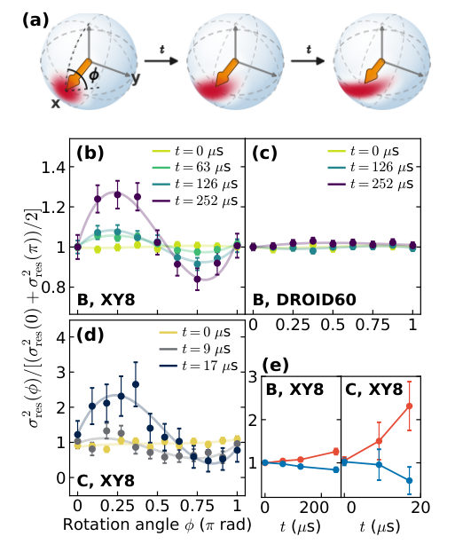
<figcaption class="paper-figure-caption"><b>Fig 3.</b> FIG. 3. (a) Schematic depicting the evolution of the quan- tum projection noise of a two-dimensional NV ensemble. The native dipolar interactions cause the projection noise to both increase in magnitude and shear. This latter effect yields an anisotropic projection noise distribution. (b–d) Residual noise σ2 res(t, ϕ) as a function of the rotation angle ϕ for sev- eral evolution times t, normalized for each t by its average at ϕ = 0, π. Solid lines are guides to the eye. (b,d) For spots B and C, the dipolar interactions (under the XY-8 se- quence) directly reshape the QPN. Under the DROID-60 de- coupling sequence (spot B), the dipolar interactions are ef- fectively SU(2)-symmetrized,...</figcaption>
</figure>
</div>

<p><strong>Summary.</strong> The research reports on achieving quantum-projection-noise-limited readout in a dense ensemble of NV centers in diamond. By using nuclear spin memory, they significantly improved readout fidelity, enabling the direct measurement of QPN. The key finding is the observation that intrinsic dipolar interactions cause the QPN to develop a measurable anisotropic profile, paving the way for solid-state entanglement sensing.</p>
<p><strong>Why it may be interesting.</strong> This work provides a crucial experimental realization of measuring collective quantum noise in a solid-state platform, directly linking fundamental many-body interactions (dipolar coupling) to measurable quantum metrological signatures (noise anisotropy).</p>
<details>
<summary>Detailed structure</summary>
<p><strong>Main problem.</strong> The primary goal was to directly observe and characterize the quantum projection noise (QPN) in a strongly-interacting, two-dimensional ensemble of solid-state spins, specifically quantifying how intrinsic dipolar interactions modify this noise profile.</p>
<p><strong>Main result.</strong> The authors successfully demonstrated QPN-resolved readout and directly observed that the dipolar interactions shear the QPN into a measurable anisotropic profile, opening pathways for solid-state entanglement sensing.</p>
<p><strong>Method.</strong> The measurement technique involved leveraging repetitive readout via the NV's nuclear spin memory to reach the quantum projection noise limit, followed by measuring the time-dependent variance of the collective spin operator along different axes.</p>
<p><strong>Model / system.</strong> The system is a dense, strongly interacting ensemble of Nitrogen-Vacancy (NV) centers in diamond, confined to a thin 2D layer. The dynamics are governed by dipolar interactions, which are analyzed using the collective spin Hamiltonian.</p>
<p><strong>Key observables.</strong> Residual variance ($\sigma^2_{	ext{res}}$), Quantum Projection Noise ($\sigma^2_{	ext{QPN}}$), and the angular dependence of the noise ($\sigma^2_{	ext{res}}(t, \phi)$).</p>
<p><strong>Important parameters / regimes.</strong> Readout noise ($\sigma_R$), number of spins ($N$), dipolar coupling strength ($J_0$), and the sensing time ($T_{	ext{sense}}$).</p>
<p><strong>Assumptions / limitations.</strong> The analysis assumes that readout imperfections contribute isotropically to the measured variance, allowing the measured anisotropy to be attributed solely to the spin dynamics.</p>
<p><strong>Figures summary.</strong> Figures illustrate the improvement in readout fidelity via repetitive readout, the characteristic twice-per-Rabi-cycle oscillation of QPN, and the time evolution of the noise anisotropy, showing the shearing effect of dipolar interactions.</p>
<p><strong>Paper structure.</strong> The paper progresses from establishing the necessity of high-fidelity readout (using nuclear memory) to demonstrating the QPN signature, and finally, analyzing the time evolution of the noise variance to isolate and characterize the dipolar-induced anisotropy.</p>
</details>
<details>
<summary>Abstract</summary>
<p>The nitrogen-vacancy (NV) center in diamond is a prominent quantum-sensing platform. Combining readout at the quantum projection noise limit with strong dipolar interactions promises substantial gains in sensitivity. However, experimentally accessing this regime has remained a longstanding challenge. In this work, we demonstrate quantum-projection-noise-resolved readout of a strongly-interacting, two-dimensional ensemble of NV centers. Our approach leverages repetitive readout via the NV's intrinsic $^{15}$N nuclear memory at a moderate magnetic field ($\sim 0.3$ T), improving the readout fidelities by nearly an order of magnitude. This enables us to directly resolve the quantum projection noise of a coherent spin state and to watch the ensemble's intrinsic dipolar interactions shear this noise into an anisotropic profile. Our results open the door to direct measurements of spin squeezing and entanglement-enhanced sensing in the solid state.</p>
</details>
<p><sub><a href="#top">↑ back to top</a></sub></p>

<p><a id="paper-2609.16628"></a></p>
<h3 id="quantum-simulation-of-two-dimensional-free-dirac-hamiltonian-in-multimode-circuit-qed"><a href="http://arxiv.org/abs/2609.16628v1">Quantum Simulation of Two-Dimensional Free Dirac Hamiltonian in Multimode Circuit QED</a></h3>
<p><strong>Authors:</strong> Jiwon Kang, Jiuk Lee, Eliya Blumenthal, Shay Hacohen-Gourgy, Eunseong Kim<br>
<strong>Type:</strong> experiment · <strong>Category:</strong> other · <strong>PDF:</strong> <a href="https://arxiv.org/pdf/2609.16628v1">https://arxiv.org/pdf/2609.16628v1</a><br>
<strong>Analysis basis:</strong> full PDF text, analyzed in chunks
<strong>Topic relevance:</strong> 🔥 <code>analog quantum simulation</code> <strong>4/5</strong> · <code>quantum optics experiment</code> <strong>3/5</strong> · <code>Tavis-Cummings &amp; cavity-many-emitter</code> <strong>2/5</strong> · <code>QC/QI experiment</code> <strong>1/5</strong> · <code>driven-dissipative phase transition</code> <strong>1/5</strong> · <code>methods for driven-dissipative</code> <strong>1/5</strong> · <code>quantum measurements</code> <strong>1/5</strong></p>
<div class="figure-strip-hint">↔ Scroll figures horizontally</div>
<div class="paper-figures-scroll">
<figure class="paper-figure-card">

<figcaption class="paper-figure-caption"><b>Fig 1.</b> FIG. 1: (a) Energy-level diagram of a Rabi-driven qubit interacting with cavity modes via double-sideband drives. (b) Schematic illustration of the dynamics governed by the effective Dirac Hamiltonian: σx for δ1 = −π/2 and σy for δ2 = 0. The Rabi-driven effective qubit represents the Dirac spinor, and one of the phase-space quadratures of each cavity mode corresponds to the position operator of the simulated Dirac particle. The arrows denote the spin- dependent cavity displacement direction. (c) Schematic of the experimental setup comprising a flute cavity integrated with a transmon qubit and a microstrip readout resonator.</figcaption>
</figure>
<figure class="paper-figure-card">

<figcaption class="paper-figure-caption"><b>Fig 2.</b> FIG. 2: (a) Pulse sequence for the two-dimensional Zitterbewegung quantum simulations. The cavity state is ini- tialized by double-sideband drives during the preparation stage (ti), followed by Dirac Hamiltonian evolution under simultaneous Rabi and sideband drives (tE). After qubit projection (tP ) and ringdown (tR), the cavity state is mea- sured via characteristic function measurements. The cavity-state snapshots corresponding to panels (b), (c), and (e) are marked in the sequence. (b) Cavity state snapshots during the preparation stage measured via Wigner tomography under a sideband drive with ΩSB = 10 MHz. The cavity state oscillates along the imaginary axis of phase space with a...</figcaption>
</figure>
<figure class="paper-figure-card">

<figcaption class="paper-figure-caption"><b>Fig 3.</b> Figure 2(e) illustrates the qubit-state-dependent char- acteristic functions after the projection and ringdown stage, together with representative one-dimensional cuts used to extract the slope. During trot = tP + tR, the dispersive interaction induces an additional qubit-state- dependent phase-space rotation of the cavity state. The</figcaption>
</figure>
<figure class="paper-figure-card">

<figcaption class="paper-figure-caption"><b>Fig 4.</b> FIG. 3: Experimental data and numerical simulations of one-dimensional Zitterbewegung dynamics for different effective particle masses. Dashed curves represent numer- ical simulations based on the ideal free Dirac Hamilto- nian, while solid curves correspond to simulations based on the effective free Dirac Hamiltonian implemented in the circuit-QED system, including the effects of sys- tem decoherence, RWA breakdown, and the finite an- harmonicity of the transmon qubit. Dotted markers de- note the experimental data. The effective particle mass increases for the black, red, navy, and green curves, cor- responding to ∆Ω/2π = 0, 0.07, 0.2, and 0.5 MHz, re- spectively.</figcaption>
</figure>
<figure class="paper-figure-card">

<figcaption class="paper-figure-caption"><b>Fig 5.</b> FIG. 4: Experimental data and numerical simulations of two-dimensional Zitterbewegung for two effective particle masses. Black dashed lines show the ideal Dirac dynamics, while navy solid lines show simulations including experi- mental conditions, with navy squares indicating time points sampled every 0.5 µs. Red circles show the experimental data sampled at the same time intervals up to 10 µs. (a) Dynamics for ∆Ω/2π = 0.10 MHz, shown as the two orthogonal position components versus evolution time and their projection onto the two-dimensional position plane. (b) Two-dimensional trajectory for ∆Ω/2π = 0.15 MHz.</figcaption>
</figure>
</div>

<p><strong>Summary.</strong> The research demonstrates the realization of a programmable two-dimensional free Dirac Hamiltonian using circuit QED. By coupling a transmon qubit to a multimode cavity, the authors simulate the dynamics of massive Dirac particles, observing characteristic Zitterbewegung. This establishes the platform as a powerful tool for studying higher-dimensional relativistic quantum phenomena.</p>
<p><strong>Why it may be interesting.</strong> This work is highly relevant as it pushes the boundaries of quantum simulation in circuit QED, demonstrating control over complex, relativistic Hamiltonians (like the massive Dirac equation) in a solid-state platform, which is a major goal in AMO physics.</p>
<details>
<summary>Detailed structure</summary>
<p><strong>Main problem.</strong> The primary challenge addressed is the programmable quantum simulation of two-dimensional massive Dirac dynamics, a regime that has not been experimentally explored despite successes in 1D and massless 2D simulations.</p>
<p><strong>Main result.</strong> The authors successfully realized a programmable 2D free Dirac Hamiltonian in circuit QED, observing rotational Zitterbewegung and confirming the platform's utility for higher-dimensional relativistic quantum dynamics.</p>
<p><strong>Method.</strong> The simulation relies on engineering the Hamiltonian using a single transmon qubit coupled to two modes of a multimode cavity, with dynamics analyzed via time-dependent master-equation simulations.</p>
<p><strong>Model / system.</strong> The system is a circuit QED setup using a transmon qubit coupled to a multimode cavity. The dynamics are governed by an effective Dirac Hamiltonian, which is programmed by tuning the qubit-cavity couplings and detunings.</p>
<p><strong>Key observables.</strong> Rotational Zitterbewegung of the Dirac particle, expectation values of cavity quadratures ($\langle\hat{X}_j
angle$), and time-averaged fidelity.</p>
<p><strong>Important parameters / regimes.</strong> Effective mass (tunable via detuning $\Delta\Omega$), Rabi frequencies ($\Omega_R$), cavity mode coupling strengths ($\chi_j$), and decoherence times ($T_{1,
ho}, T_{2,
ho}$).</p>
<p><strong>Assumptions / limitations.</strong> The analysis incorporates corrections beyond the Rotating-Wave Approximation (RWA), finite transmon anharmonicity, and measured decoherence effects, which are key limitations.</p>
<p><strong>Figures summary.</strong> Figures illustrate the energy-level diagram, the schematic of the Dirac Hamiltonian dynamics, the experimental setup, and time evolution plots comparing experimental data to master-equation simulations for Zitterbewegung.</p>
<p><strong>Paper structure.</strong> The paper details the physical realization of the 2D Dirac Hamiltonian, presents calibration procedures for drive amplitudes and phases, demonstrates the measurement protocol using characteristic functions, and finally analyzes the resulting Zitterbewegung dynamics while accounting for decoherence and anharmonicity.</p>
</details>
<details>
<summary>Abstract</summary>
<p>Two-dimensional massive Dirac systems feature a gapped Dirac-cone dispersion central to a broad range of phenomena in condensed-matter and topological physics. While quantum simulations have demonstrated one-dimensional Dirac dynamics and two-dimensional massless Weyl dynamics, programmable simulation of massive two-dimensional Dirac dynamics remains experimentally unexplored. Here, we realize a programmable two-dimensional free Dirac Hamiltonian in circuit QED, with independently tunable spin-momentum couplings and mass, using a single Rabi-driven qubit coupled to two modes of a multimode cavity. Using this Hamiltonian, we observe rotational Zitterbewegung of a two-dimensional massive Dirac particle and its dependence on the effective mass. Time-dependent master-equation simulations incorporating measured decoherence, corrections beyond the rotating-wave approximation (RWA), and anharmonicity of the transmon reproduce the observed dynamics. Our results establish multimode circuit QED as a compact, programmable platform for higher-dimensional relativistic quantum dynamics and provide a foundation for exploring dynamical and topological phenomena in gapped Dirac systems.</p>
</details>
<p><sub><a href="#top">↑ back to top</a></sub></p>

<p><a id="paper-2609.16438"></a></p>
<h3 id="analytical-solutions-to-the-non-equilibrium-greens-functions-in-large-math96math-syk-models"><a href="http://arxiv.org/abs/2609.16438v1">Analytical solutions to the non-equilibrium Green's functions in large-$q$ SYK models</a></h3>
<p><strong>Authors:</strong> Jan C. Louw<br>
<strong>Type:</strong> theory · <strong>Category:</strong> statistical mechanics · <strong>PDF:</strong> <a href="https://arxiv.org/pdf/2609.16438v1">https://arxiv.org/pdf/2609.16438v1</a><br>
<strong>Analysis basis:</strong> full PDF text, analyzed in chunks
<strong>Topic relevance:</strong> 🔥 <code>Keldysh / 2PI / non-Gaussian methods</code> <strong>4/5</strong> · <code>non-equilibrium universality</code> <strong>3/5</strong> · <code>scars &amp; prethermalization</code> <strong>3/5</strong> · <code>methods for driven-dissipative</code> <strong>2/5</strong></p>
<div class="figure-strip-hint">↔ Scroll figures horizontally</div>
<div class="paper-figures-scroll">
<figure class="paper-figure-card">

<figcaption class="paper-figure-caption"><b>Fig 1.</b> FIG. 1. (a) Schematic of the quench protocol. The time axis is partitioned into I0, I1. The quench occurs at τ1 = 0. The quench strengths are encoded in the alignment of the coupling vectors, cab ≡⃗Ja · ⃗Jb/(JaJb). To simplify notation, we label functions by the intervals in which their time arguments lie, e.g. J (t1) = Ja or cab = c(t1, t2) for (t1, t2) ∈Ib ×Ib. (b) Partition of the (t1, t2)-plane into blocks Ib×Ib. The boundary conditions are imposed along the blue connecting lines.</figcaption>
</figure>
</div>

<p><strong>Summary.</strong> This work analytically solves the non-equilibrium Green's functions for the SYK model following a quench between non-commuting Hamiltonians. By finding closed-form solutions for all time blocks, the authors derive an exact temperature update rule. Crucially, they show that the system must heat up, providing a geometric manifestation of the second law of thermodynamics for this chaotic quantum system.</p>
<p><strong>Why it may be interesting.</strong> The rigorous derivation of non-equilibrium dynamics and the emergence of thermodynamic laws (like the second law) from microscopic, solvable models like SYK is highly relevant for understanding thermalization in complex quantum systems.</p>
<details>
<summary>Detailed structure</summary>
<p><strong>Main problem.</strong> The paper provides analytical solutions for the non-equilibrium Green's functions in large-$q$ Sachdev-Ye-Kitaev (SYK) models following a quench between non-commuting Hamiltonians.</p>
<p><strong>Main result.</strong> Analytical solutions are found for all time blocks, establishing an exact temperature update rule and demonstrating geometrically that heating is inevitable for the closed system, confirming the second law.</p>
<p><strong>Method.</strong> The analysis uses the Keldysh contour formalism and solves differential equations governing the Green's functions in the large-$q$ limit, utilizing SL(2) symmetry parametrization.</p>
<p><strong>Model / system.</strong> The system is the Sachdev-Ye-Kitaev (SYK) model, a strongly interacting, chaotic quantum system. The study focuses on the dynamics after a quench between non-commuting $q/2$-body Hamiltonians.</p>
<p><strong>Key observables.</strong> Non-equilibrium Green's functions, $G(t_1, t_2)$, and the resulting temperature update rule relating pre- and post-quench energies.</p>
<p><strong>Important parameters / regimes.</strong> The large-$q$ limit, the coupling factor $c_{01}$ (related to the angle between coupling vectors $\vartheta$), and the initial/final energies $\epsilon_0, \epsilon_1$.</p>
<p><strong>Assumptions / limitations.</strong> The solvability is established in the large-$q$ limit and at leading order in $1/q$. The analysis focuses on the Hermitian case ($\phi=0$) for real couplings.</p>
<p><strong>Figures summary.</strong> Figure 1 schematically illustrates the quench protocol by partitioning the time axis and the $(t_1, t_2)$-plane into distinct time blocks.</p>
<p><strong>Paper structure.</strong> The paper builds upon known leading-order solutions, derives the dynamics for the off-diagonal Green's function blocks using differential equations, solves these equations analytically, and finally extracts the energy and temperature update rules.</p>
</details>
<details>
<summary>Abstract</summary>
<p>It is known that the Sachdev-Ye-Kitaev (SYK) model is exactly solvable at leading order in $1/q$; specifically, the instantaneously thermal time block after the quench is known in closed form. Thus far the remaining (inherently out of equilibrium) blocks have only been numerically accessible. Here we provide their analytical solutions for a quench between non-commuting $q/2$-body SYK Hamiltonians. We obtain the Green's functions in closed form for every time block. We extract a simple relation between the pre- and post-quench energies $ε_1 \propto ε_0$ leading to an exact temperature update rule. Via a Cauchy-Schwarz inequality, we show that heating is inevitable for the closed system; hence, the second law emerges geometrically. The solution is used in a companion paper to address what ``instantaneous thermalization'' means at finite $q$.</p>
</details>
<p><sub><a href="#top">↑ back to top</a></sub></p>

<p><a id="paper-2609.16609"></a></p>
<h3 id="floquet-dressing-and-bath-spectral-effects-on-the-geometric-phase-of-a-driven-dissipative-qubit"><a href="http://arxiv.org/abs/2609.16609v1">Floquet Dressing and Bath Spectral Effects on the Geometric Phase of a Driven Dissipative Qubit</a></h3>
<p><strong>Authors:</strong> Chirag Arora<br>
<strong>Type:</strong> theory · <strong>Category:</strong> statistical mechanics · <strong>PDF:</strong> <a href="https://arxiv.org/pdf/2609.16609v1">https://arxiv.org/pdf/2609.16609v1</a><br>
<strong>Analysis basis:</strong> full PDF text, analyzed in chunks
<strong>Topic relevance:</strong> 🔥 <code>methods for driven-dissipative</code> <strong>4/5</strong> · <code>driven-dissipative phase transition</code> <strong>3/5</strong> · <code>correlated / nonlocal dissipation</code> <strong>1/5</strong> · <code>non-equilibrium universality</code> <strong>1/5</strong> · <code>quantum measurements</code> <strong>1/5</strong></p>
<div class="figure-strip-hint">↔ Scroll figures horizontally</div>
<div class="paper-figures-scroll">
<figure class="paper-figure-card">

<figcaption class="paper-figure-caption"><b>Fig 1.</b> FIG. 1: Floquet quasienergy spectrum of the driven sym- metric qubit as a function of the normalized drive fre- quency Ω/∆for increasing drive amplitude. Panels (a)– (c) correspond to A/∆= 0.1, 1.0, and 10.0, respec- tively. The vertical dotted lines indicate the bare n- photon resonance frequencies, Ω/∆= 1/n, and are in- cluded as guides to the eye. With increasing drive ampli- tude, higher-order Floquet sectors become increasingly mixed, giving rise to additional avoided crossings and a progressively richer quasienergy structure.</figcaption>
</figure>
<figure class="paper-figure-card">

<figcaption class="paper-figure-caption"><b>Fig 2.</b> FIG. 2: Bath spectral density and drive-dressed Flo- quet sidebands of the driven symmetric qubit for in- creasing drive amplitude. Panels (a)-(c) correspond to A/∆= 0.1, 1.0, and 10.0, respectively, at fixed drive fre- quency Ω/∆= 1. In each panel, the spectral density J(ω) is shown as a function of the normalized bath fre- quency ω/∆for representative cutoff frequencies ωc/∆= 1, 5, 10, 20, and 50. The vertical dashed lines indicate the drive-dressed transition frequencies ωn = |∆εF +nΩ|, where ∆εF is the Floquet quasienergy gap and n la- bels the Floquet sideband. Increasing the drive ampli- tude modifies both the quasienergy gap and the distri- bution of Floquet sidebands, thereby...</figcaption>
</figure>
<figure class="paper-figure-card">

<figcaption class="paper-figure-caption"><b>Fig 3.</b> FIG. 3: For A/∆= 0.1 and some representative values of ωc/∆at α = 0.05, T/∆= 1.5, and tmem = 5τc, panels (a), (b), and (c) show the GP γD for driven dissipative, dissipative and driven non-dissipative qubit respectively. The drive frequency Ω= ∆is resonant with the bare tunneling splitting of the undriven qubit.</figcaption>
</figure>
<figure class="paper-figure-card">

<figcaption class="paper-figure-caption"><b>Fig 4.</b> FIG. 4: For representative values of ωc/∆at α = 0.05, T/∆= 1.5, and tmem = 5τc the δγD values for weak driv- ing amplitude, corresponding to A/∆= 0.1 are shown. The drive frequency Ω/∆= 1 is resonant with the bare tunneling splitting of the bare undriven qubit.</figcaption>
</figure>
<figure class="paper-figure-card">

<figcaption class="paper-figure-caption"><b>Fig 5.</b> FIG. 5: For A/∆= 1.0 and some representative values of ωc/∆at α = 0.05, T/∆= 1.5, and tmem = 5τc, panels (a), (b), and (c) show the GP γD for driven dissipative, dissipative and driven non-dissipative qubit respectively. The drive frequency Ω= ∆is resonant with the bare tunneling splitting of the undriven qubit.</figcaption>
</figure>
</div>

<p><strong>Summary.</strong> This paper analyzes the geometric phase dynamics of a driven, dissipative qubit using advanced numerical techniques. It demonstrates that periodic driving allows for active control over how the environment deforms the quantum phase. The findings establish a crucial link between Floquet engineering, quantum dissipation, and the control of open quantum system dynamics.</p>
<p><strong>Why it may be interesting.</strong> This work directly addresses the control of quantum coherence (GP) in realistic, open quantum systems by explicitly incorporating the effects of time-periodic driving, which is a major topic in modern quantum physics.</p>
<details>
<summary>Detailed structure</summary>
<p><strong>Main problem.</strong> The paper investigates how the interplay between periodic driving (Floquet dressing) and environmental dissipation affects the geometric phase (GP) accumulated by a driven qubit.</p>
<p><strong>Main result.</strong> Periodic driving offers a mechanism to control the dissipative geometric phase, as the resulting dissipation pathways depend jointly on Floquet matrix-element weights and the bath spectral overlap.</p>
<p><strong>Method.</strong> The study employs the numerically exact Process-Tensor Time-Evolving Matrix Product Operator (PT-TEMPO) method combined with Floquet theory to analyze the reduced density matrix dynamics.</p>
<p><strong>Model / system.</strong> The system is a symmetric two-level system (qubit) modeled by the Spin-Boson Model (SBM), subjected to a longitudinal monochromatic drive and coupled to an Ohmic bosonic environment.</p>
<p><strong>Key observables.</strong> Geometric Phase (GP), non-additive GP contribution ($\delta\gamma_D$), and the purity/Bloch vector trajectory of the reduced density matrix.</p>
<p><strong>Important parameters / regimes.</strong> Drive amplitude ($A$), drive frequency ($\Omega$), and the characteristic bath spectral density parameters ($\alpha, \omega_c$).</p>
<p><strong>Assumptions / limitations.</strong> The analysis avoids assuming weak coupling or Markovian dynamics, using the PT-TEMPO method for accuracy.</p>
<p><strong>Figures summary.</strong> Figures compare the strengths of three coupling terms—Floquet matrix-element weights, bath spectral density, and their product—across different drive frequency regimes to determine the conditions for strong dissipation.</p>
<p><strong>Paper structure.</strong> The paper follows a structure introducing the model, reviewing the theoretical framework (including GP and Floquet theory), presenting numerical results analyzing the drive-bath interplay, and concluding with the implications for quantum control.</p>
</details>
<details>
<summary>Abstract</summary>
<p>Building on recent work by Wang et al. on the dissipative geometric phase (GP) in the spin-boson model (SBM), the GP dynamics of a periodically driven symmetric SBM are investigated using the numerically exact process-tensor time-evolving matrix product operator (PT-TEMPO) method. A symmetric two-level system subjected to a longitudinal monochromatic drive along the same system coordinate that couples to an Ohmic bosonic environment exhibits rich GP dynamics arising from the interplay between driving and dissipation. To isolate cooperative drive-bath effects, a non-additive GP contribution is introduced that separates the driven dissipative response from its driven-unitary and undriven-dissipative components. Periodic driving is found to either suppress or enhance bath-induced GP deformation depending on the interplay between drive and bath timescales. These trends are interpreted through Floquet spectral steering, whereby the drive redistributes the coherent dynamics among quasienergy sidebands whose transition frequencies and Fourier-resolved system-bath matrix elements determine their coupling to the environmental spectrum. Floquet analysis shows that the dominant dissipative pathways are governed jointly by Floquet matrix-element weights and bath spectral overlap, rather than by either alone. These results connect Floquet engineering, quantum dissipation, and GP dynamics and establish periodic driving as a means of controlling the GP of open quantum systems (OQSs).</p>
</details>
<p><sub><a href="#top">↑ back to top</a></sub></p>

<p><a id="paper-2609.16819"></a></p>
<h3 id="generation-of-pure-spin-currents-via-nonadiabatic-quantum-pumping-in-an-antiferromagnetic-chain"><a href="http://arxiv.org/abs/2609.16819v1">Generation of pure spin currents via nonadiabatic quantum pumping in an antiferromagnetic chain</a></h3>
<p><strong>Authors:</strong> Leila Eslami, Fatemeh Bourbour, Somaieh Ahmadi, Santanu K. Maiti<br>
<strong>Type:</strong> theory · <strong>Category:</strong> other · <strong>PDF:</strong> <a href="https://arxiv.org/pdf/2609.16819v1">https://arxiv.org/pdf/2609.16819v1</a><br>
<strong>Analysis basis:</strong> full PDF text, analyzed in chunks
<strong>Topic relevance:</strong> 🔥 <code>Keldysh / 2PI / non-Gaussian methods</code> <strong>4/5</strong> · <code>methods for driven-dissipative</code> <strong>2/5</strong> · <code>Frenkel-Kontorova</code> <strong>1/5</strong> · <code>driven-dissipative phase transition</code> <strong>1/5</strong></p>
<div class="figure-strip-hint">↔ Scroll figures horizontally</div>
<div class="paper-figures-scroll">
<figure class="paper-figure-card">

<figcaption class="paper-figure-caption"><b>Fig 1.</b> Figure 1. Schematic representation of a 20-site atomic chain with an antiferromagnetic</figcaption>
</figure>
<figure class="paper-figure-card">

<figcaption class="paper-figure-caption"><b>Fig 2.</b> Figure 2. Spectral current of electrons in (a) non-magnetic and (b) antiferromagnetic</figcaption>
</figure>
<figure class="paper-figure-card">

<figcaption class="paper-figure-caption"><b>Fig 3.</b> Figure 3. Spectral current for spin-up (red) and spin-down (green) in the presence of exchange</figcaption>
</figure>
<figure class="paper-figure-card">

<figcaption class="paper-figure-caption"><b>Fig 4.</b> Figure 3 displays the spectral current for spin-up and spin-down in the presence of exchange</figcaption>
</figure>
<figure class="paper-figure-card">

<figcaption class="paper-figure-caption"><b>Fig 5.</b> Figure 4. (a) Pumped DC current for spin-up (solid green line) and spin-down (dashed red line)</figcaption>
</figure>
</div>

<p><strong>Summary.</strong> This work theoretically explores generating pure spin currents in an antiferromagnetic chain using nonadiabatic quantum pumping. By applying time-dependent potentials and analyzing spin-resolved currents via NEGF, the authors show that the spin current can be significantly enhanced while the net charge current is suppressed. This provides a promising pathway for designing energy-efficient spin-pumping spintronic devices.</p>
<p><strong>Why it may be interesting.</strong> The ability to engineer spin currents purely through time-dependent potentials in an antiferromagnet is highly relevant for spintronics, offering a mechanism for low-dissipation spin manipulation without relying on magnetic impurities or external magnetic fields.</p>
<details>
<summary>Detailed structure</summary>
<p><strong>Main problem.</strong> The study investigates the generation and control of pure spin currents in an antiferromagnetic chain without applying an external bias.</p>
<p><strong>Main result.</strong> The research demonstrates that by operating in the nonadiabatic pumping regime, a pure spin current can be generated and controlled by tuning the chemical potential and driving frequency, allowing for spin current flow with negligible net charge transfer.</p>
<p><strong>Method.</strong> The analysis employs the Keldysh non-equilibrium Green's function (NEGF) formalism, treating the system as a tight-binding model driven by time-dependent potentials.</p>
<p><strong>Model / system.</strong> The system is an antiferromagnetic atomic chain coupled to two non-magnetic leads. The Hamiltonian includes antiferromagnetic exchange interactions, and the driving is achieved via two time-dependent potentials applied to the chain ends.</p>
<p><strong>Key observables.</strong> Pumped spin current ($I_s$), charge current ($I_c$), spin-up and spin-down spin-resolved currents.</p>
<p><strong>Important parameters / regimes.</strong> Driving frequency ($\Omega$), chemical potential ($\mu$), and the antiferromagnetic exchange field ($h$).</p>
<p><strong>Assumptions / limitations.</strong> The calculations utilize the Keldysh NEGF formalism and often employ the first harmonic approximation in the Floquet representation.</p>
<p><strong>Figures summary.</strong> Figures illustrate the spectral current for spin-up/spin-down channels, showing spectral separation at high frequencies. Subsequent figures map the pumped DC currents ($I_c$ and $I_s$) as functions of $\mu$ and $\Omega$, highlighting the near-vanishing charge current while spin current persists.</p>
<p><strong>Paper structure.</strong> The paper systematically analyzes the spin current response across different driving regimes: first showing spin symmetry in the adiabatic regime, then demonstrating frequency-induced spin-up/spin-down divergence in the nonadiabatic regime, and finally mapping the control landscape using $\mu$ and $\Omega$ to achieve pure spin pumping.</p>
</details>
<details>
<summary>Abstract</summary>
<p>In this study, quantum spin pumping in an antiferromagnetic chain driven by time-dependent potential is investigated. The aim is to explore the possibility of generating and controlling spin currents in the absence of external bias and to examine the role of exchange field and periodic driving in the separation of spin-up and spin-down currents. The system is described using a tight-binding model, and spin-resolved currents are calculated employing the Keldysh non-equilibrium Green's function formalism. Two time-dependent potentials with a specific phase difference are applied to the two ends of the chain, while the chemical potentials of both electrodes are set equal. The results demonstrate that in the adiabatic regime (low frequencies), the response of the two spin channels is nearly identical. However, as the driving frequency increases and the system enters the nonadiabatic regime, absorption and emission processes of energy quanta become activated, leading to significant differences between spin-up and spin-down currents. The pumped current exhibits strong dependence on the chemical potential, allowing for the control of both magnitude and direction of the spin current through its adjustment. With increasing frequency, the spin current enhances, and parameters can be tuned such that the charge current nearly vanishes while a considerable spin current persists. This finding indicates the feasibility of achieving nearly pure spin pumping without net charge transfer in the antiferromagnetic chain. The results provide a promising perspective for designing spin-pumping devices based on antiferromagnetic systems.</p>
</details>
<p><sub><a href="#top">↑ back to top</a></sub></p>

<p><a id="paper-2609.16692"></a></p>
<h3 id="in-situ-quantum-optical-measurement-for-colloidal-quantum-dots-confined-in-an-optical-trap"><a href="http://arxiv.org/abs/2609.16692v1">In-Situ Quantum Optical Measurement for Colloidal Quantum Dots Confined in an Optical Trap</a></h3>
<p><strong>Authors:</strong> Zhi-Bo Ni, Jiong-Zhao Li, Jia-Wang Yu, Xiao-Tian Cheng, Yun-Ran Wang, Dai-Bao Hou, Yan-Hua Liu, Wei Fang, Xing Lin, Chao-Yuan Jin<br>
<strong>Type:</strong> experiment · <strong>Category:</strong> other · <strong>PDF:</strong> <a href="https://arxiv.org/pdf/2609.16692v1">https://arxiv.org/pdf/2609.16692v1</a><br>
<strong>Analysis basis:</strong> full PDF text, analyzed in chunks
<strong>Topic relevance:</strong> 🔥 <code>quantum measurements</code> <strong>4/5</strong> · 🔥 <code>quantum optics experiment</code> <strong>4/5</strong></p>
<div class="figure-strip-hint">↔ Scroll figures horizontally</div>
<div class="paper-figures-scroll">
<figure class="paper-figure-card">

<figcaption class="paper-figure-caption"><b>Fig 1.</b> Figure 1: Enhanced optical trapping of CQDs through particle-size enlargement by polystyrene encapsulation. (a) Schematic illustration of the weak optical confinement of small bare CQDs and the enhanced optical trapping after polystyrene encapsulation, to- gether with the encapsulation process via thermal polymerization of styrene. (b) Calculated radial and axial optical restoring forces and Brownian diffusion coefficient as a function of particle diameter. The shaded regions indicate the representative size ranges of bare CQDs and polymer-encapsulated particles.</figcaption>
</figure>
<figure class="paper-figure-card">

<figcaption class="paper-figure-caption"><b>Fig 2.</b> Figure 2: Custom-built inverted micro-photoluminescence platform with optical trapping. The system integrates a 1064 nm CW trapping laser, 450 nm excitation sources, a high- NA oil-immersion objective, and switchable detection pathways for spectroscopy, wide-field imaging, and photon correlation measurements.</figcaption>
</figure>
<figure class="paper-figure-card">

<figcaption class="paper-figure-caption"><b>Fig 3.</b> Figure 3: Reconstructed trapping field and simulated optical trapping potentials at a nominal focal depth of 2 µm. (a) Cross-sectional view of the focal-field distribution across the glass– water interface, showing the nominal trapping plane and the aberration-shifted focal position. (b) Top view of the reconstructed focal field at the trapping plane. The slight asymmetry of the focal spot arises from the x-polarized trapping beam under high-NA focusing. (c) Axial and (d) radial potential-energy landscapes for particles of different diameters.</figcaption>
</figure>
<figure class="paper-figure-card">

<figcaption class="paper-figure-caption"><b>Fig 4.</b> Figure 4: Spatial confinement and trajectory analysis of an optically trapped PQD. (a) Representative wide-field PL image of a trapped PQD. (b) Histograms of the positional deviations, with mean absolute deviations below 20 nm. (c) Extracted x–y positions at different trapping powers with an integration time of 100 ms per frame, showing progressively narrower distributions at higher powers. (d) Plateau mean-square displacement (MSD) along one lateral direction, which decreases with increasing trapping power, indicating stronger optical confinement.</figcaption>
</figure>
<figure class="paper-figure-card">

<figcaption class="paper-figure-caption"><b>Fig 5.</b> Figure 5: Optical characterization of PQDs under optical trapping. (a) Absorption and pho- toluminescence spectra of the CQD ensemble, showing a pronounced decrease in absorption at longer wavelengths. (b) Emission spectra of a single trapped PQD nanoparticle recorded over 120 s. (c) Photoluminescence decay curves of a trapped PQD measured at different trapping powers.</figcaption>
</figure>
</div>

<p><strong>Summary.</strong> This research presents a robust method to optically trap colloidal quantum dots by encapsulating them in a polymer matrix. This encapsulation enhances the mechanical trapping force, allowing for stable confinement measurements (fluctuations &lt; 20 nm) while simultaneously confirming that the quantum properties, such as single-photon antibunching, remain fully preserved under the trapping laser illumination.</p>
<p><strong>Why it may be interesting.</strong> This work directly addresses the critical engineering hurdle in quantum optics: how to physically manipulate fragile quantum emitters (like single-photon sources) in a controlled environment without destroying their quantum coherence or emission properties.</p>
<details>
<summary>Detailed structure</summary>
<p><strong>Main problem.</strong> The primary challenge is achieving stable optical confinement for solution-based colloidal quantum dots (CQDs) without compromising their delicate quantum optical properties.</p>
<p><strong>Main result.</strong> The authors successfully demonstrated that encapsulating CQDs in a polymer matrix allows for robust optical trapping (fluctuations &lt; 20 nm) while preserving single-photon emission characteristics ($g^{(2)}(0) \approx 0.225$).</p>
<p><strong>Method.</strong> The study combines optical trapping experiments with advanced characterization techniques, including trajectory tracking, spectral measurements, and second-order photon correlation measurements.</p>
<p><strong>Model / system.</strong> The system involves Colloidal Quantum Dots (CQDs) encapsulated in a transparent polymer matrix (PQDs), which are trapped using a focused 1064 nm laser beam. The analysis models the optical forces using T-matrix calculations to account for the increased particle size.</p>
<p><strong>Key observables.</strong> Positional fluctuations ($\Delta x, \Delta y < 20 	ext{ nm}$), single-photon antibunching ($g^{(2)}(0)$), intrinsic emission spectra, and trapping potential depth relative to thermal energy ($k_B T$).</p>
<p><strong>Important parameters / regimes.</strong> Effective particle diameter ($\sim 100 	ext{ nm}$), trapping laser wavelength (1064 nm), and the comparison between trapping potential depth and thermal energy.</p>
<p><strong>Assumptions / limitations.</strong> The analysis assumes the particle motion can be approximated by fluctuations near an approximately harmonic potential, and the polymer encapsulation successfully isolates the quantum emitter from trapping-induced damage.</p>
<p><strong>Figures summary.</strong> Figures show the custom micro-PL platform setup, reconstructed focal fields, calculated trapping potential energy landscapes (axial/radial), positional deviation histograms, and measurements confirming persistent antibunching ($g^{(2)}(0)$).</p>
<p><strong>Paper structure.</strong> The paper progresses from identifying the trade-off between stability and quantum integrity, proposing polymer encapsulation as a solution, calculating the enhanced trapping potential using advanced force models, and finally validating the method by measuring both stable confinement (trajectories) and quantum emission (photon correlation).</p>
</details>
<details>
<summary>Abstract</summary>
<p>While optical manipulation of atomic arrays has reached a high degree of precision and scalability, the stable optical confinement of solution-based artificial atoms like colloidal quantum dots (CQDs) remains hindered by weak trapping forces and thermal fluctuations. High-intensity trapping often compromises the quantum properties of these emitters, creating a significant trade-off between mechanical stability and optical integrity. To overcome this, we propose encapsulating CQDs within a transparent polymer matrix, thereby increasing the effective interaction volume and optical restoring force without altering the emitters themselves. This strategy allows for stable spatial confinement under standard experimental conditions, as evidenced by the direct resolution of positional fluctuations through photoluminescence imaging and trajectory tracking. With averaged position fluctuations below 20 nm, the intrinsic emission spectra and photoluminescence decay dynamics remain largely unaffected, and photon-correlation measurements confirm the full preservation of single-photon emission. These findings establish a robust method for the controlled confinement of colloidal quantum emitters and in-situ quantum-optical measurements for future advancements in quantum-optical manipulation of artificial atoms.</p>
</details>
<p><sub><a href="#top">↑ back to top</a></sub></p>

<p><a id="paper-2609.16164"></a></p>
<h3 id="schwinger-keldysh-effective-actions-for-non-hydrodynamic-poles-and-branch-cuts"><a href="http://arxiv.org/abs/2609.16164v1">Schwinger-Keldysh effective actions for non-hydrodynamic poles and branch cuts</a></h3>
<p><strong>Authors:</strong> Andrea Amoretti, Matteo Anselmi, Daniel K. Brattan<br>
<strong>Type:</strong> theory · <strong>Category:</strong> statistical mechanics · <strong>PDF:</strong> <a href="https://arxiv.org/pdf/2609.16164v1">https://arxiv.org/pdf/2609.16164v1</a><br>
<strong>Analysis basis:</strong> full PDF text, analyzed in chunks
<strong>Topic relevance:</strong> 🔥 <code>Keldysh / 2PI / non-Gaussian methods</code> <strong>4/5</strong> · <code>correlated / nonlocal dissipation</code> <strong>1/5</strong> · <code>driven-dissipative phase transition</code> <strong>1/5</strong> · <code>non-equilibrium universality</code> <strong>1/5</strong></p>
<div class="figure-strip-hint">↔ Scroll figures horizontally</div>
<div class="paper-figures-scroll">
<figure class="paper-figure-card">

<figcaption class="paper-figure-caption"><b>Fig 1.</b> Figure 1: Numerical and analytic expressions for the non-perturbative pole emerg- ing from the branch point. We set c = τ∗= 1.</figcaption>
</figure>
<figure class="paper-figure-card">

<figcaption class="paper-figure-caption"><b>Fig 2.</b> Figure 1 compares the numerical solution with this asymptotic expression. Equation (3.43) admits a sharper reading once the branch point itself is allowed to move. In the strictly nondispersive model the endpoint of the continuum is fixed at ω∗= −i/τ∗, and the expansion above is non-perturbative in its entirety. Including the higher-gradient corrections of Section 3.7, the endpoint acquires an ordinary dispersion, ω∗(k) = −i/τ∗(k) with τ∗(k) = τ∗[1 −k2ℓ2(τ∗) + O(k4)], and the pole follows it,</figcaption>
</figure>
<figure class="paper-figure-card">

<figcaption class="paper-figure-caption"><b>Fig 3.</b> Figure 2: Imaginary parts of the two poles as functions of the momentum, in units c = τ∗= 1.</figcaption>
</figure>
<figure class="paper-figure-card">

<figcaption class="paper-figure-caption"><b>Fig 4.</b> Figure 3: Comparison between analytic and numerical results for the emerging pole in two cases with positive m.</figcaption>
</figure>
</div>

<p><strong>Summary.</strong> This work develops a theoretical framework using Schwinger-Keldysh effective actions to describe thermal relaxation in systems exhibiting complex spectral features like branch cuts. By extending the model from discrete relaxation modes to continuous spectra, the authors derive transport coefficients and show how these non-hydrodynamic features constrain the system's dynamics. This provides a powerful tool for analyzing non-equilibrium quantum transport.</p>
<p><strong>Why it may be interesting.</strong> The rigorous treatment of non-equilibrium dynamics, especially the incorporation of continuous spectral features (branch cuts) into effective actions, is crucial for understanding transport in strongly coupled, non-equilibrium quantum systems.</p>
<details>
<summary>Detailed structure</summary>
<p><strong>Main problem.</strong> The paper constructs Schwinger-Keldysh effective actions to rigorously incorporate non-hydrodynamic poles and branch cuts that govern the relaxation dynamics of thermal systems.</p>
<p><strong>Main result.</strong> The theory successfully models the transition from discrete relaxation spectra to continuous branch cuts, providing closed-form expressions for transport coefficients like conductivity.</p>
<p><strong>Method.</strong> The analysis employs the Schwinger-Keldysh formalism, utilizing Gaussian effective actions and analyzing the resulting spectral properties via complex frequency continuation.</p>
<p><strong>Model / system.</strong> The system models a thermal medium undergoing relaxation of conserved densities, extended from a simple U(1) current to include additional vector fields (Maxwell-Cattaneo type extension).</p>
<p><strong>Key observables.</strong> Retarded thermal correlators, optical conductivity ($\sigma(\omega, \vec{k})$), and the structure of the effective action $S_{MC}$.</p>
<p><strong>Important parameters / regimes.</strong> Relaxation time density ($  au$), complex frequency ($\omega$), and momentum ($\vec{k}$); the analysis distinguishes between hydrodynamic and non-hydrodynamic poles.</p>
<p><strong>Assumptions / limitations.</strong> The analysis is restricted to the Gaussian order of the effective action, and approximations like the energy-diagonal Relaxation-Time Approximation (RTA) are used for microscopic realization.</p>
<p><strong>Figures summary.</strong> Figures illustrate the structure of branch cuts parameterized by relaxation time ($    au$) and show the derived transport coefficients for transverse and longitudinal responses.</p>
<p><strong>Paper structure.</strong> The paper progresses by first setting up the SK action for relaxation fields, then generalizing the spectrum from discrete poles to a continuous density ($    au$), and finally deriving the transport coefficients and the effective action using techniques like the Schur complement.</p>
</details>
<details>
<summary>Abstract</summary>
<p>Retarded thermal correlators, analytically continued to complex frequency, exhibit non-hydrodynamic poles and branch cuts that constrain hydrodynamics. We construct Gaussian Schwinger-Keldysh effective actions in which branch cuts arise from continua of relaxation poles and response functions are governed by Stieltjes transforms of relaxation-time densities. Dynamical KMS symmetry, positivity and stability constrain the spectra, while endpoint behaviour controls the local branch structure and near-edge pole scaling. The illustrative examples of uniform and power-law densities exhibit respectively beyond-all-orders pole-endpoint separation and a continuous interpolation between pole-pole and pole-branch-point termination. Finally, we show that an energy-dependent relaxation-time approximation in kinetic theory provides a microscopic realization of our branch cuts at zero momentum.</p>
</details>
<p><sub><a href="#top">↑ back to top</a></sub></p>

<p><a id="paper-2609.17307"></a></p>
<h3 id="forbidden-subspaces-in-quantum-state-smoothing"><a href="http://arxiv.org/abs/2609.17307v1">Forbidden Subspaces in Quantum State Smoothing</a></h3>
<p><strong>Authors:</strong> Chon-Fai Kam, Kai-Wen Wong<br>
<strong>Type:</strong> theory · <strong>Category:</strong> other · <strong>PDF:</strong> <a href="https://arxiv.org/pdf/2609.17307v1">https://arxiv.org/pdf/2609.17307v1</a><br>
<strong>Analysis basis:</strong> full PDF text, analyzed in chunks
<strong>Topic relevance:</strong> 🔥 <code>quantum measurements</code> <strong>4/5</strong> · <code>Keldysh / 2PI / non-Gaussian methods</code> <strong>1/5</strong> · <code>driven-dissipative phase transition</code> <strong>1/5</strong></p>
<div class="figure-strip-hint">↔ Scroll figures horizontally</div>
<div class="paper-figures-scroll">
<figure class="paper-figure-card">

<figcaption class="paper-figure-caption"><b>Fig 1.</b> FIG. 1. (a) Quantum smoothing. The record before t gives ρt and the record after t a post-selection Et. Their pairing has a family of images indexed by s, only s = 1</figcaption>
</figure>
<figure class="paper-figure-card">

<figcaption class="paper-figure-caption"><b>Fig 2.</b> FIG. 2. A first-order transition of the record’s class along Eq. (6), which mixes a spin- 1</figcaption>
</figure>
</div>

<p><strong>Summary.</strong> This paper develops a rigorous criterion for determining when a quantum process between preparation and post-selection can be described by a 'classical' state via quantum state smoothing. It shows that this classicality is guaranteed if and only if the forbidden subspace respects the initial state's symmetries. Violations of this symmetry lead to measurable contextuality, quantified by the negativity of the smoothed effect.</p>
<p><strong>Why it may be interesting.</strong> This work provides a deep theoretical link between fundamental concepts like contextuality, quantum measurement theory, and the mathematical structure of quantum states, which is highly relevant for understanding open quantum systems dynamics.</p>
<details>
<summary>Detailed structure</summary>
<p><strong>Main problem.</strong> The paper investigates the conditions under which a quantum system undergoing state smoothing between preparation and post-selection admits a 'classical' state, linking this to the concept of contextuality.</p>
<p><strong>Main result.</strong> The admissibility of the smoothed state (classicality) is equivalent to the subspace forbidden by the post-selection being invariant under the initial state's action. Failure of this invariance certifies contextuality.</p>
<p><strong>Method.</strong> The analysis uses the positivity of the smoothed state $\Phi_s(E, 
ho)$ parameterized by $s$, comparing it to necessary conditions derived from the invariance of the kernel of the post-selection effect $E$.</p>
<p><strong>Model / system.</strong> The system involves quantum state smoothing, characterized by the interpolation between the Kirkwood–Dirac operator and its adjoint, applied to an initial state $
ho$ and a post-selection effect $E$.</p>
<p><strong>Key observables.</strong> Positivity of $\Phi_s(E, 
ho)$, the dimension parity of forbidden subspaces (even for Haldane, odd for trivial), and the magnitude of negative eigenvalues of $\Phi_0$.</p>
<p><strong>Important parameters / regimes.</strong> The smoothing parameter $s \in [0, 1]$, the critical point $\lambda^* = \pi/4$, and the structure of the symmetry group $G$.</p>
<p><strong>Assumptions / limitations.</strong> The analysis relies on the modular flow formalism and specific bounds derived from noncontextual models, though the converse of some theorems are noted as false.</p>
<p><strong>Figures summary.</strong> Figure 1 illustrates quantum smoothing, the condition for admissibility, and the parity of dimensions. Figure 2 shows a first-order transition of the record's class mixing two sectors at a critical point.</p>
<p><strong>Paper structure.</strong> The paper progresses by establishing the necessary and sufficient condition for positivity ($\Phi_s \ge 0$), linking this to $
ho$-invariance of $ ext{ker } E$. It then quantifies contextuality via negative eigenvalues of $\Phi_0$ and discusses the topological implications of the resulting class structure.</p>
</details>
<details>
<summary>Abstract</summary>
<p>A system between a preparation and a post-selection has had no agreed state since 1964. With positivity as the criterion, a post-selection admits an interval of orderings around the symmetric one exactly when the subspace it forbids is spanned by eigenvectors of a full-rank filtered state. Otherwise it certifies contextuality, testable on a qubit. The averaged filtered state carries the entanglement spectrum of the record, so the smallest forbidden subspaces a symmetry allows are even-dimensional in the Haldane class and odd in the trivial one. That parity is the record's topological class.</p>
</details>
<p><sub><a href="#top">↑ back to top</a></sub></p>

<p><a id="paper-2609.16172"></a></p>
<h3 id="two-dimensional-materials-toward-cmos-compatible-scalable-quantum-hardware"><a href="http://arxiv.org/abs/2609.16172v1">Two-Dimensional Materials toward CMOS-Compatible Scalable Quantum Hardware</a></h3>
<p><strong>Authors:</strong> Mara Lieberegts, Ye Wang<br>
<strong>Type:</strong> both · <strong>Category:</strong> quantum information and computing · <strong>PDF:</strong> <a href="https://arxiv.org/pdf/2609.16172v1">https://arxiv.org/pdf/2609.16172v1</a><br>
<strong>Analysis basis:</strong> full PDF text, analyzed in chunks
<strong>Topic relevance:</strong> 🔥 <code>QC/QI experiment</code> <strong>4/5</strong> · <code>analog quantum simulation</code> <strong>1/5</strong> · <code>quantum measurements</code> <strong>1/5</strong></p>
<div class="figure-strip-hint">↔ Scroll figures horizontally</div>
<div class="paper-figures-scroll">
<figure class="paper-figure-card">

<figcaption class="paper-figure-caption"><b>Fig 1.</b> Figure 1. Development pathways for advanced CMOS and quantum hardware, and the possible role of transferable 2D material process modules. The upper track follows the progression from FinFETs and gate-all-around nanosheets to stacked and 2D channel devices. The lower track moves from individual qubit devices to larger arrays and integrated control, followed by a research target for 2D-enabled hardware. The stages organize capabilities and research directions; they do not assign equal maturity to the two tracks or predict a common timetable. Foundry arrays and cryogenic control refer to established qubit platforms, not demonstrated wafer-scale 2D qubit arrays. Process modules developed for 2D...</figcaption>
</figure>
<figure class="paper-figure-card">

<figcaption class="paper-figure-caption"><b>Fig 2.</b> Figure 2. Representative 2D qubits, components, and physical phenomena, classified by the evidence shown. (a) A vdW Josephson junction formed by vdW contact between two NbSe₂ crystals, showing hysteretic current–voltage response and a Fraunhofer critical-current pattern (demonstrated component). (b) A miniaturized transmon whose shunt capacitor is a NbSe₂/hBN/NbSe₂ stack, coupled to SQUID, control and readout lines at 20 mK (demonstrated qubit). (c) A gate-defined single-electron quantum dot in bilayer graphene, with the perpendicular-field spectrum resolving K/K′ valley states split by spin–orbit coupling and Zeeman energy (demonstrated component). (d) Room- temperature spin defects in...</figcaption>
</figure>
<figure class="paper-figure-card">

<figcaption class="paper-figure-caption"><b>Fig 3.</b> Figure 3. Manufacturing barriers to scalable 2D quantum chips. (a) Highest reported evidence tier (continuous film → single-crystal growth → demonstrated quantum functionality → large-area functionality with statistics) versus demonstrated synthesis scale for 2D superconductors (refs 68–71), 2D magnets (refs 72–75) and hBN or quantum emitters (refs 48, 51, 76–80). The diagonal arrow marks the route toward scalable 2D quantum chips. Functionality refers to material properties, not qubit operation; the evidence tiers do not establish wafer-scale qubit yield or coherent control. (b) Free-energy landscape of 2D quantum-material synthesis: conventional phases lie in an accessible basin, whereas...</figcaption>
</figure>
<figure class="paper-figure-card">

<figcaption class="paper-figure-caption"><b>Fig 4.</b> Figure 4. Closed qualification loop for CMOS-compatible 2D quantum hardware. Room-temperature wafer mapping (1) screens material and process variation. Cryogenic population testing (2) measures distributions of device and quantum properties. Process feedback (3) links these measurements to growth, transfer, patterning, and treatment records. Statistical analysis and AI or machine learning act on the linked records to flag process drift. Proposed changes must be tested on independent wafers, with quantum performance and yield measured again before process qualification. All maps, distributions, and device drawings are schematic.</figcaption>
</figure>
<figure class="paper-figure-card">

<figcaption class="paper-figure-caption"><b>Fig 5.</b> Figure 5. Proposed quantum-device concepts enabled by vdW structural degrees of freedom. Each panel is a proposed concept, not an experimentally demonstrated qubit. (a) Intercalated-ion qubits: rare-earth ions ordered within a vdW gap form candidate atom-like sites built into a chip. Controlled site occupancy and charge state, initialization, coherent manipulation, readout, coherence, and ion–ion coupling must be established. (b) Chiral-junction qubits: a CISS-active chiral interlayer could produce a φ₀ junction whose phase offset is set by structure rather than applied flux. A reproducible zero-field phase shift, with trapped flux and domain effects excluded, should precede tests of...</figcaption>
</figure>
</div>

<p><strong>Summary.</strong> This perspective reviews how 2D materials are being leveraged to overcome the manufacturability hurdles in solid-state quantum computing. By drawing parallels between CMOS fabrication and quantum chip requirements, it highlights successful component demonstrations, such as $    ext{hBN}$ capacitors, and proposes future concepts for scalable quantum hardware.</p>
<p><strong>Why it may be interesting.</strong> It directly addresses the engineering challenge of scaling quantum devices by linking quantum physics phenomena (spin-valley coupling, Josephson effects) to established semiconductor manufacturing paradigms.</p>
<details>
<summary>Detailed structure</summary>
<p><strong>Main problem.</strong> Developing scalable solid-state quantum processors requires manufacturability, as fabrication defects compromise qubit coherence.</p>
<p><strong>Main result.</strong> Two-dimensional (2D) materials offer promising routes to address fabrication challenges by enabling the integration of quantum components with CMOS-compatible processes.</p>
<p><strong>Method.</strong> The paper evaluates the opportunities by comparing the process modules required for CMOS fabrication against the needs of quantum hardware, assessing progress across different levels of demonstration.</p>
<p><strong>Model / system.</strong> The focus is on various 2D material platforms, including graphene, hBN, and TMDs, used to build superconducting qubits (e.g., Josephson junctions) and spin qubits.</p>
<p><strong>Key observables.</strong> Coherence times ($T_1, T_2$), Josephson supercurrent, gate-tunability of coupling, and single-shot readout fidelity.</p>
<p><strong>Important parameters / regimes.</strong> Operating temperature (cryogenic vs. room temperature), junction type ($    ext{vdW}$ vs. epitaxial), and material interface quality.</p>
<p><strong>Assumptions / limitations.</strong> The primary assumption is that the established processes for 2D material development in CMOS can be successfully transferred to maintain quantum coherence in quantum circuits.</p>
<p><strong>Figures summary.</strong> Figures compare CMOS and quantum hardware development pathways, and tables categorize experimental progress across four levels: demonstrated qubit, component, physical phenomenon, and proposed concept.</p>
<p><strong>Paper structure.</strong> The paper systematically evaluates 2D materials for quantum hardware by identifying key challenges, reviewing successful component-level demonstrations (e.g., $   ext{hBN}$ capacitors), and proposing future concepts (e.g., chiral junctions, moiré qudits).</p>
</details>
<details>
<summary>Abstract</summary>
<p>Manufacturability is one of several constraints on developing solid-state quantum processors, along with qubit performance, control, connectivity, cryogenic operation, and fault tolerance. Chemical residues, structural disorder, and non-uniform interfaces introduced during fabrication can compromise qubit coherence. Two-dimensional (2D) materials, with their atomically thin crystals and van der Waals interfaces, offer routes to address some of these challenges. Their concurrent development as next-generation CMOS channel materials motivates an examination of whether relevant processes can be transferred to quantum chips. This Perspective evaluates the opportunities and limitations of 2D materials for CMOS-compatible quantum hardware.</p>
</details>
<p><sub><a href="#top">↑ back to top</a></sub></p>
<hr>
<p>
<a href="index.html">← Index</a>
 · <a href="papers_02.html">Next →</a>
</p>
<hr>

</body>
</html>
